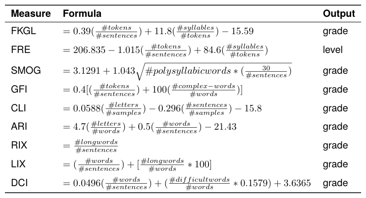
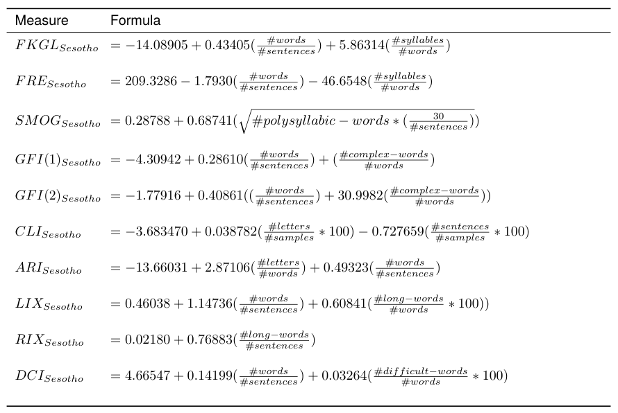

RAIL 2024Traduction automatique
Adaptation de neuf mesures traditionnelles de lisibilité de texte en Sesotho
Traduction automatique, non relue par un humain. L'article original est la version de référence ; les phrases soulignées sont celles dont les contrôles automatiques n'étaient pas sûrs.
Proceedings of the Fifth Workshop on Resources for African Indigenous Languages @ LREC-COLING 2024.
Traduction par Ernst van Gassen (Arktos AI Lab), sous licence CC BY-NC 4.0 comme l'original. Réutilisation permise avec attribution, à usage non commercial uniquement. Les auteurs originaux n'ont pas relu ni approuvé cette traduction.
Texte brut réutilisable, avec sa licence : Français · LICENCE
Affiliations
Johannes Sibeko, Menno van Zaanen
Nelson Mandela University, South African Centre for Digital Language Resources
University way, Summerstrand, Port Elizabeth, Internal Box 340, Private bag X6001, Potchefstroom
Adresses e-mail retirées pour la protection de la vie privée. Elles figurent dans le PDF original.
Résumé
Cet article traite de l'adaptation des mesures de lisibilité anglaises traditionnelles à Sesotho, une langue autochtone d'Afrique australe à faibles ressources. Nous utilisons un corpus de lisibilité traduit pour extraire les caractéristiques textuelles des textes sesotho et les niveaux de lisibilité des traductions anglaises. Nous examinons la corrélation entre les différentes caractéristiques pour nous assurer que les caractéristiques non concurrentes sont utilisées dans les métriques de lisibilité. Ensuite, par des analyses de régression linéaire, nous examinons l'impact des caractéristiques textuelles des textes en sesotho sur les niveaux globaux de lisibilité (qui sont évalués à partir des traductions en anglais). En partant de la structure des mesures traditionnelles de lisibilité en anglais, les modèles de régression linéaire identifient les coefficients et les ordonnées à l'origine pour les différentes variables considérées dans les formules de lisibilité pour le sesotho. En fin de compte, nous proposons dix formules de lisibilité pour le sesotho (une de plus que les neuf initiales ; nous fournissons deux formules basées sur la structure de l'indice de brouillard de Gunning). Nous introduisons également des ordonnées à l'origine pour l'indice de brouillard de Gunning, l'indice de Läsbarhets et l'indice de lisibilité (qui n'ont pas d'ordonnées à l'origine dans les variantes anglaises) dans les formules en sesotho.
Mots-clés
Lisibilité du texte, Sesotho, Langue à faibles ressources
1. Introduction
Les rapports de la Progress in International Reading Literacy Study (PIRLS) montrent des performances inférieures constantes chez les apprenants lisant dans les langues autochtones sud-africaines (Roux et al., 2021). Selon les normes de la PIRLS, les apprenants qui obtiennent moins de 400 points sur le benchmark ont du mal à extraire des informations fondamentales du texte, ce qui rend difficile pour eux de répondre même aux questions les plus simples. Malheureusement, au moins 81 % des apprenants dans les langues indigènes sud-africaines ont obtenu des résultats inférieurs au benchmark de 400 points (Roux et al., 2021). En conséquence, une telle performance entrave la réalisation d'une éducation de qualité inclusive et équitable dans essentiellement toutes les matières du lycée, car les apprenants ne peuvent pas accéder à l'information provenant de sources écrites. Des mesures doivent être prises pour relever ce défi de l'alphabétisation, comme le souligne le quatrième des dix-sept objectifs de développement durable des Nations Unies (ONU), qui met l'accent sur l'importance d'assurer une éducation de qualité inclusive et équitable et de promouvoir les possibilités d'apprentissage tout au long de la vie pour tous.
Une solution possible aux faibles niveaux d'alphabétisation est de s'assurer que les enfants apprennent à lire correctement, ce qui ne peut être atteint qu'en pratiquant la lecture (van Bergen et al., 2018). En d'autres mots, les apprenants doivent lire pour que leurs compétences en lecture s'améliorent. Une façon d'éveiller l'envie de lire est de fournir aux apprenants à la fois des opportunités de choisir des textes et du temps de lecture (Rasheed, 2023). Selon Rasheed (2023), les apprenants qui ont l'autonomie de choisir leurs supports de lecture ont tendance à mieux performer que ceux à qui on assigne des textes. Cependant, il est essentiel de noter qu'un mauvais choix de supports de lecture peut entraver le développement des compétences en lecture lorsque les textes ne sont pas bien adaptés au niveau de compétence du lecteur (Mohammed et al., 2023). En gardant cela à l'esprit, il devient évident que les parties prenantes de l'éducation ont besoin d'un outil pour évaluer la lisibilité des textes afin d'identifier les textes qui correspondent au niveau de compétence en lecture du lecteur. L'élaboration de mesures de lisibilité pour les différentes langues autochtones d'Afrique du Sud permettra de mesurer objectivement la lisibilité des textes.
Il convient de noter que les langues autochtones d’Afrique du Sud disposent de peu de ressources. En tant que tel, le choix des approches pour l'exploration de la lisibilité du texte est quelque peu limité. Ici, nous proposons l'utilisation de mesures traditionnelles de lisibilité qui se concentrent sur les propriétés superficielles du texte (Van Oosten et al., 2010; Zamanian et Heydari, 2012).
Malgré un intérêt de recherche de longue date pour l'évaluation de la lisibilité, les mesures traditionnelles de lisibilité n'ont pas été adaptées aux langues indigènes d'Afrique du Sud (Leopeng, 2019). Le manque de mesures de lisibilité du texte pour les langues autochtones sud-africaines jusqu’à présent a conduit à l’utilisation de mesures de lisibilité en anglais (non modifiées) pour les analyses de lisibilité dans les langues autochtones sud-africaines telles que isiZulu (Land, 2015), isiXhosa (Carel, 2019; Leopeng, 2019) et Sesotho (Krige et Reid, 2017; Reid et al., 2019). Récemment, Sibeko (2023) rapporte des tentatives pour développer des mesures de lisibilité du texte pour Sesotho. Leur article se concentre sur les ressources linguistiques de base pour le sesotho requises pour développer les mesures de lisibilité. Cependant, ils ne s'attaquent pas au développement réel de mesures de lisibilité.
Dans cet article, nous nous concentrons sur le développement de mesures de lisibilité pour Sesotho et pas toutes les douze langues officielles de l'Afrique du Sud. Bien qu'une approche similaire puisse être appliquée aux autres langues, la langue des signes, l'une des douze langues officielles, peut nécessiter une approche différente. Dans l'ensemble, nous abordons la question de recherche suivante :
Comment les mesures traditionnelles de lisibilité peuvent-elles être efficacement modifiées et adaptées aux caractéristiques spécifiques du sesotho?
Pour répondre à cette question, nous adaptons les mesures traditionnelles de lisibilité au sesotho en utilisant l'anglais comme langue ressource élevée pour le sesotho, langue à faible ressource. L'hypothèse sous-jacente est que les textes qui sont faciles à lire en sesotho seront également faciles à lire lorsqu'ils sont traduits en anglais et que les textes sesotho difficiles seront traduits en textes anglais difficiles. Tout d'abord, le contexte de cette investigation est présenté dans la section 2, puis la méthodologie est décrite dans la section 3, suivie de l'évaluation dans la section 4. Enfin, nous présentons notre discussion et nos conclusions dans la section 5.
2. Contexte
2.1. Un aperçu de Sesotho
Le sesotho est une langue parlée en Afrique australe. C'est l'une des deux langues officielles au Lesotho (Gouvernement du Lesotho, 1993), l'une des douze langues officielles en Afrique du Sud (République d'Afrique du Sud, 2023), et l'une des langues officielles marginalisées au Zimbabwe (Parlement du Zimbabwe, 2021). De plus, le sesotho est parlé en Zambie, en Namibie et au Botswana. Au moins plus de dix millions de personnes utilisent le sesotho au quotidien. Il est utilisé et enseigné dans les secteurs de l'enseignement de base et supérieur.
Le sesotho a au moins six dialectes reconnus, à savoir le Sekwena, le Sekgolokwe, le Serotse, le Setlokwa, le Sephuthi et le Setaung (Kula et Marten, 2008; Mohasi et Mashao, 2005; Nhlapo, 2021). Parmi ces dialectes, Sekwena a été promu et est ainsi devenu le standard d'écriture en Sesotho (Nakin, 2009; Sekere, 2004). De plus, il existe au moins deux orthographes officiellement reconnues pour le sesotho, à savoir, l'orthographe sud-africaine et l'orthographe lesothane (Makutoane, 2022; Setaka, 2018; Setaka et Prinsloo, 2020; Sibeko, 2022). La recherche décrite dans cet article est basée sur des textes qui sont écrits en utilisant l'orthographe sud-africaine du sesotho.
2.2 Mesures de lisibilité traditionnelles
Dans cet article, nous explorons neuf mesures traditionnelles de lisibilité en anglais pour une adaptation au sesotho. Ces mesures comprennent le Flesch-Kincaid Grade Level (FKGL) (Kincaid et al., 1975), le Flesch-Reading Ease (FRE) (Flesch, 1948, 1974), le Simple Measure of Gobbledygook (SMOG) (Mc Laughlin, 1969; Zhou et al., 2017) et le Gunning Fog Index (GFI) (Gunning, 1952, 1969), qui reposent sur des informations liées aux syllabes, ainsi que les mesures du Coleman-Liau index (CLI) (Coleman and Liau, 1975), de l'Automatic Readability index (ARI) (Kaur et al., 2018; Smith and Senter, 1967), du Readability index (RIX) et du Läsbarhets index (LIX) (Björnsson, 1968; Björnsson, 1983) qui sont basées sur des informations de longueur de mot. Enfin, nous explorons également l'index Dale-Chall (Dale et Chall, 1948) qui s'inspire d'une liste de mots couramment utilisés. Les formules de chacune de ces mesures, ainsi que le type de sortie, sont présentées dans le tableau 1.
L'approche générale des mesures basées sur les syllabes consiste à considérer le nombre de syllabes dans chaque mot et à traiter les résultats de manière spécifique à la mesure. Le FKGL et le FRE traitent les informations sur les syllabes en évaluant le nombre de syllabes par mot, tandis que les mesures SMOG et GFI excluent les mots "simples" de deux syllabes ou moins, se concentrant ainsi uniquement sur les mots de trois syllabes ou plus.
Étant donné que le nombre de syllabes dans les mots longs dépend de la langue, nous avons soupçonné que l'exigence anglaise de 3+ syllabes pourrait ne pas être indicative de mots longs mesurés par le nombre de syllabes par mot en sesotho. Par exemple, dans une étude similaire, Kusec et al. (2002) ont ajusté le nombre minimum de syllabes comptées de la langue d'aide anglaise à la langue à faible ressource, le croate. Ils ont comparé les 100 mots les plus fréquemment utilisés en anglais et en croate pour déterminer les différences entre les nombres de syllabes dans les deux langues afin de déterminer le nombre de syllabes typiques dans les mots longs en croate. En fin de compte, ils ont ajusté l'exigence pour les mots polysyllabiques à 4+ syllabes. Nous considérons à la fois les mots de 3+ et 4+ syllabes dans nos expériences.
En plus des informations sur les syllabes, la longueur des mots et la longueur des phrases sont également des caractéristiques communes utilisées dans les mesures, comme le montre le tableau 1. La longueur des mots orthographiques, c'est-à-dire la longueur des mots mesurée par le nombre de lettres par mot (Ziegler et al., 2001), a été un sujet d'intérêt dans les études langagières, les recherches indiquant des variations entre les langues et au fil du temps. Par exemple, Bochkarev et al. (2015) étudient l'évolution des longueurs de mots en anglais et en russe telles qu'observées à travers les bibliothèques électroniques, Google Books et Google Ngram Viewer. Leurs résultats indiquent une augmentation de la longueur moyenne des mots dans les deux langues, l'anglais passant de 4,4 lettres par mot en l'an 1700 à 4,6 en l'an 2000. De plus, ils notent que ces chiffres ont été rapportés différemment dans d'autres études où la longueur moyenne des mots en anglais était de 5,1 lettres par mot tandis que celle du russe était légèrement plus élevée à 5,28 lettres par mot (Bochkarev et al., 2015). Selon Hefer (2013), les mots en Sesotho sont en moyenne presque un caractère complet plus court qu'en anglais. Inversement, Loukatou (2019) indique une longueur moyenne de mot de 4,24 pour le sesotho et une moyenne plus basse de 3,02 lettres par mot pour l'anglais dans leur corpus de sur-segmentation.

Tableau 1 : Mesures de lisibilité classiques sélectionnées (Flesch-Kincaid Grade Level (FKGL), Flesch-Reading Ease (FRE), Simple Measure of Gobbledygook (SMOG), Gunning Fog Index (GFI), Coleman-Liau index (CLI), Automatic Readability index (ARI), Readability index (RIX), Läsbarhets index (LIX), Dale-Chall index (DCI)), formules correspondantes et type de résultat.
3. Méthodologie
Selon De Clercq et al. (2014), il y a au moins trois étapes à décrire lors du développement de mesures de lisibilité. Ce sont (i) le développement d'un corpus de lisibilité, (ii) la description d'une méthodologie, et (iii) la réalisation des tâches de prédiction (François et Fairon, 2012; Collins-Thompson, 2014). Nous structurons la discussion de notre méthodologie pour adapter les mesures de lisibilité traditionnelles en sesotho en utilisant ces trois étapes ci-dessous.
3.1. Étape 1 : Un corpus de lisibilité
Dans le contexte des langues autochtones d'Afrique du Sud, y compris le sesotho, l'indisponibilité de corpus annotés avec des niveaux de lisibilité souligne la nécessité de développer de nouveaux corpus ou de réutiliser des corpus existants pour entraîner des mesures de lisibilité. Dans ce contexte, Sibeko et Van Zaanen (2021) suggèrent l'utilisation de textes d'examen pour la création de corpus de lisibilité pour les langues indigènes d'Afrique du Sud.
Pour notre étude, nous utilisons le corpus de lisibilité des traductions sesotho-anglais de Sibeko (2024). Ce corpus comprend des traductions parallèles au niveau du document de 80 textes de compréhension de lecture et de rédaction de résumés en sesotho, issus du corpus d'examen de niveau 12 (Sibeko et Van Zaanen, 2023). Pour les textes produits après 2011, les traductions anglaises sont essentiellement des rétrotraductions, car les textes ont été initialement traduits de l'anglais vers le sesotho à des fins d'examen. Notons que les textes d'examen en sesotho indiquent que la source originale est en anglais, mais ils n'indiquent pas exactement où les textes anglais peuvent être trouvés (d'où l'application du processus de rétrotraduction).
Le corpus comprend 13 793 mots, composé de 6 040 types, avec une longueur de phrase moyenne de 17,73 mots en sesotho. De plus, les traductions en anglais incluent 12 005 mots avec 6 130 types, présentant une longueur moyenne de phrase de 15,75 mots. Les textes d’examen couvrent la période allant de 2009 à 2019.
3.2 Étape 2: Une méthodologie
La méthodologie globale consiste en trois étapes. Tout d'abord, nous extrayons des caractéristiques de texte pertinentes à partir de textes Sesotho. Deuxièmement, nous utilisons les traductions anglaises qui correspondent aux textes sesotho pour déterminer les niveaux de lisibilité des textes en utilisant les mesures de lisibilité traditionnelles. Avec cette approche, nous suivons El-Haj et Rayson (2016) qui montrent que la lisibilité des textes dans une langue mieux dotée peut être utilisée comme banc d'essai pour l'estimation de la lisibilité des textes dans une langue peu dotée. De même, nous alignons la distribution des niveaux de lisibilité en sesotho avec ceux observés dans les traductions anglaises. Troisièmement, nous utilisons des modèles de régression linéaire pour déterminer l'impact des caractéristiques textuelles des textes en Sesotho sur les scores globaux des différentes mesures de lisibilité calculées sur les traductions en anglais.
Pour fournir un aperçu supplémentaire de l'impact des différentes caractéristiques du texte, nous examinons les caractéristiques du texte utilisées dans les mesures de lisibilité traditionnelles. La brève discussion qui suit présente certaines des caractéristiques textuelles considérées dans cet article.
3.2.1. Longueur des mots par lettres
Il y a deux principales préoccupations concernant les longueurs moyennes des mots en sesotho. D'une part, en tant que langue agglutinante, on peut s'attendre à ce que les mots soient relativement longs en sesotho (Blanchard, 2011). D'autre part, les mots monosyllabiques qui peuvent comprendre entre une et quatre lettres (et surtout les mots d'une seule lettre) peuvent entraîner des moyennes plus courtes pour les textes en sesotho (Messerschmidt et al., 2003). De plus, la longueur globale des mots dans le texte, en nombre de lettres, peut être affectée par l'utilisation des accords du sujet en sesotho. Dans notre ensemble de données, les mots anglais présentent une moyenne de 4,34 lettres par mot, tandis que les mots sesotho démontrent une moyenne de 4,07 lettres par mot. Néanmoins, étant donné que la longueur moyenne des mots en sesotho est relativement similaire à celle de l'anglais, nous suivons la directive anglaise pour les mesures LIX et RIX et considérons donc les mots de plus de six lettres comme des mots longs.
3.2.2. Longueur des mots en syllabes
Les mots polysyllabiques se réfèrent à des mots avec plus d'une syllabe. Cependant, les mesures traditionnelles utilisées dans cette recherche, en particulier les mesures SMOG et GFI, ne considèrent que les mots avec trois syllabes ou plus comme polysyllabiques, brumeux et complexes. Dans notre ensemble de données, les mots anglais présentent une moyenne de 1,26 syllabes par mot, tandis que les textes sesotho démontrent 2,0 syllabes par mot. Les mots sesotho tendent à avoir plus de syllabes que les mots anglais. Ainsi, bien que nous définissions les mots polysyllabiques (tels qu'utilisés dans les différentes métriques) comme des mots avec trois syllabes ou plus, nous étudions également la possibilité d'augmenter le nombre minimum de syllabes dans les mots polysyllabiques à des mots avec quatre syllabes.
3.2.3. Mots communs
La mesure DCI repose sur l'hypothèse qu'il existe des mots couramment utilisés et qui devraient donc être faciles à lire. Selon cette méthode, les mots qui n'apparaissent pas sur la liste des mots fréquemment utilisés sont considérés comme difficiles. Pour notre expérience, nous utilisons la liste des mots courants en sesotho compilée par Sibeko et De Clercq (2023). Nous devons utiliser cette liste avec prudence, cependant, puisqu'elle n'a pas été dérivée de textes éducatifs. Malheureusement, nous ne connaissons pas d'autres listes de mots disponibles pour une utilisation dans ce contexte.
3.2.4. Échantillons
Certaines formules, comme les mesures DCI et CLI, nécessitent l'échantillonnage de petites quantités de texte. Comme les textes dans ces expériences sont relativement courts, nous renonçons aux étapes d'échantillonnage. De cette façon, par exemple, le nombre de phrases dans la formule CLI se réfère à toutes les phrases du texte au lieu d'un petit ensemble de phrases échantillonnées. Comme on peut l'observer dans le Tableau 1, la formule CLI se concentre uniquement sur les longueurs de mots comptées en lettres, et les phrases dans l'ensemble du texte (pour les formules en anglais et en sesotho).
3.3. Étape 3 : Tâches de prédiction
3.3.1. Corrélations
Avant de développer des mesures de lisibilité de texte pour le sesotho, nous étudions d'abord les interrelations entre les différentes caractéristiques textuelles qui sous-tendent les mesures de lisibilité. Cette exploration donne un aperçu de la nature des caractéristiques du texte Sesotho.
L'exploration des interrelations entre les caractéristiques textuelles utilisées dans les formules traditionnelles de lisibilité a été calculée à l'aide de la mesure de corrélation de Pearson. Les résultats de ces corrélations sont présentés dans le tableau 2. Notez que les étiquettes V1-16 sont utilisées pour représenter les caractéristiques dans les colonnes 1 à 16. Notamment, toutes les corrélations sont significatives avec p < .05.
L'examen des caractéristiques du texte de Sesotho par l'analyse de corrélation révèle des résultats intéressants. Par exemple, des alignements parfaits sont découverts entre les comptes de mots et de syllabes, ainsi qu'entre les comptes de syllabes et de lettres. Cela suggère une relation cohérente et prévisible entre ces caractéristiques en ce sens que plus de syllabes se traduiront par des mots plus longs. En outre, de fortes corrélations positives émergent, mettant en évidence l'association entre les syllabes par mot et la fréquence des mots polysyllabiques, tandis que les corrélations négatives indiquent qu'une augmentation du nombre de lettres par mot peut entraîner moins de phrases, de mots et de mots longs.
Nous avons également étudié les corrélations entre les formules basées sur les syllabes et les caractéristiques textuelles liées aux syllabes. Les résultats du tableau 3 révèlent de faibles corrélations négatives entre le nombre de syllabes et les scores de l'indice FKGL, du GFI et de l'indice SMOG. Cette observation suggère que les nombres de syllabes en Sesotho s'alignent avec ceux en anglais, ce qui indique que les textes avec des nombres de syllabes plus élevés sont susceptibles d'être plus difficiles à lire.
Comme mentionné précédemment, nous avons également envisagé de modifier les critères de définition des mots polysyllabiques en explorant une augmentation potentielle de trois à un minimum de quatre syllabes (4+ syllabes). Nos résultats révèlent que le maintien d'un minimum de trois syllabes démontre systématiquement des corrélations plus fortes avec les scores de lisibilité par rapport à un minimum de quatre syllabes. Par conséquent, pour le sesotho, nous considérons également uniquement les 3+ syllabes comme dans les formules anglaises originales.

Tableau 2 : La corrélation des caractéristiques textuelles utilisées dans les mesures de lisibilité calculées à partir des textes en Sesotho.
3.3.2. Modèles de régression linéaire
Enfin, nous créons des modèles de régression linéaire en utilisant la fonction de modèle de régression linéaire 'lm' dans R pour déterminer les coefficients des différentes caractéristiques textuelles en utilisant nos données d'apprentissage Sesotho et les niveaux de lisibilité calculés sur les textes anglais. Les structures des modèles de régression linéaire en Sesotho imitent celles des mesures de lisibilité en anglais. De cette façon, nous essayons de nous assurer que les valeurs de lisibilité calculées à l'aide d'une mesure de lisibilité particulière sont utilisées pour créer une mesure de lisibilité Sesotho qui utilise une structure similaire et les mêmes caractéristiques textuelles que la mesure anglaise.
Nous avons ensuite créé des modèles de régression linéaire pour les différentes mesures. Les formules sont présentées dans le tableau 4. Nos formules de lisibilité proposées pour le sesotho maintiennent un degré de préservation structurelle pour les formules DCI, CLI, SMOG, FRE et FKGL. Notez qu'une version plus simplifiée de la formule CLI utiliserait les comptes réels et non les pourcentages et donnerait CLISesotho = -3.683470 + 3.8782( #lettres #mots ) - 72.7569( #phrases #mots ).
Lors de la comparaison des poids des formules Sesotho avec ceux des formules anglaises, nous observons plusieurs choses. Tout d'abord, il y a une réduction des coefficients de syllabes par mot dans les formules Sesotho par rapport aux formules anglaises. Par exemple, cela se manifeste par une pondération accrue et négative des syllabes par mot dans la formule FRE du sesotho.
Deuxièmement, nous proposons deux structures pour la formule GFI. Les deux versions introduisent une ordonnée à l'origine pour la formule, impliquant une déduction de 0,177916, ce qui est différent de la formulation originale. La première formule proposée, GF I(1)Sesotho, suit plus étroitement la structure de la formule originale anglaise, bien qu'une ordonnée à l'origine soit ajoutée. La deuxième formule, GF I(1)Sesotho, introduit un coefficient au pourcentage de mots complexes, s'écartant ainsi de la structure originale.
Les formules anglaises LIX et RIX n'incluent pas de pondérations. Pour aligner les valeurs de lisibilité acquises par l'application de mesures de lisibilité en anglais sur les textes d'examen traduits, avec les caractéristiques du texte observées dans les textes Sesotho, il était nécessaire d'introduire des facteurs de pondération. Cet ajustement a assuré une correspondance plus précise entre les valeurs de lisibilité et les formules adaptées. Pour le LIX, l’impact des mots par phrase est pris en compte, tandis que le pourcentage de mots longs reste inchangé. Cependant, dans la formule du RIX, nous attribuons un poids à la fraction de mots longs par phrase. Notez que nous introduisons également des ordonnées à l'origine pour le LIXSesotho et le RIXSesotho.

Tableau 3 : La corrélation des mesures basées sur les syllabes et des informations sur les syllabes calculées sur les textes en Sesotho.

Tableau 4 : Mesures de lisibilité et formules Sesotho adaptées correspondantes.
En outre, une diminution notable du poids attribué aux phrases par mot est évidente dans la version Sesotho de la CLI, en contraste avec son homologue anglais. De même, l'ordonnée à l'origine du CLISesotho est sensiblement plus basse que celle de la variante anglaise. De même, un contraste est perceptible dans l'ordonnée à l'origine de la formule ARISesotho. Malgré le coefficient cohérent des mots par phrase, l'ARI Sesotho implique une pondération réduite des lettres par mot.
Enfin, le coefficient des mots difficiles apparaît un peu plus faible dans la formule CLI sesotho, par opposition à la formule anglaise. Inversement, la formule CLI du sesotho attribue un coefficient plus élevé pour les mots par phrase.
4. Évaluation
La sortie du résumé de la régression linéaire fournit cinq statistiques pour évaluer les performances de chaque modèle et la signification de leurs coefficients. Nous considérons le R-carré ajusté, la statistique F et l'erreur type résiduelle. Le résultat des évaluations est présenté dans le Tableau 5.

Tableau 5 : Évaluations des modèles de régression linéaire adaptés pour le Sesotho. Notez que les valeurs p sont toutes significatives à p < .001.
Tout d'abord, la statistique F est un indicateur de la validité globale des modèles. Elle met en évidence sa signification statistique dans tous les modèles, comme le montrent les valeurs p observées (p < .001). Cette affirmation témoigne de la contribution composite des attributs prédicteurs dans l'élucidation de la variation de la lisibilité du texte, prouvant ainsi que les résultats sont très peu susceptibles d'être le fruit du hasard.
Deuxièmement, la métrique R-carré ajusté indique dans quelle mesure les variables indépendantes décrivent la variance des données. Notre analyse révèle des valeurs plus élevées particulièrement pour l'ARISesotho, signifiant que les variables des lettres par mot et des phrases par mot représentent environ 91 % de la capacité prédictive associée aux scores ARI. Cependant, des résultats contrastés sont observés pour la formule SMOG, où le nombre de mots polysyllabiques ne représente que 59,16% de l'influence prédictive globale. Cette variation met en lumière les différents degrés de contribution des caractéristiques prédictives à travers les modèles formulés.
Enfin, les erreurs-types résiduelles inférieures décrivent l'écart-type des valeurs résiduelles, où des valeurs inférieures indiquent de meilleurs résultats.
5. Discussion et conclusions
Le raisonnement sous-jacent de cette recherche est l'absence d'une méthode objective pour identifier les niveaux de lisibilité des textes dans Sesotho. Nous postulons que les niveaux de littératie déjà faibles dans les langues indigènes d'Afrique du Sud, y compris le sesotho, pourraient potentiellement être aggravés par la sélection inappropriée de matériaux textuels, surtout compte tenu du faible nombre de textes disponibles dans les langues indigènes. Nous prévoyons que la capacité à évaluer le degré de lisibilité des textes dans la langue aidera à la fois les apprenants et les enseignants à identifier des supports de lecture de niveau approprié. À son tour, l'utilisation d'un cadre objectif d'évaluation de la lisibilité améliorera l'accès à un enseignement de qualité (lecture et donc général) à Sesotho. Cependant, nous reconnaissons que les limitations précédemment attribuées aux mesures de lisibilité traditionnelles restent applicables, même dans le contexte de nos adaptations proposées.
Étant donné que le sesotho, comme la plupart des autres langues indigènes d'Afrique australe, est une langue peu dotée en ressources, aucun corpus étiqueté de manière appropriée en termes de lisibilité n'existe. Pour résoudre ce problème, les textes éducatifs écrits à l'origine en Sesotho ont été traduits en anglais. Les traductions anglaises ont ensuite constitué la source de l'évaluation de la lisibilité, car des mesures traditionnelles de lisibilité anglaise peuvent être appliquées. Compte tenu des caractéristiques textuelles extraites du texte Sesotho, combinées avec les valeurs de lisibilité en anglais, des modèles de régression linéaire peuvent être créés. La structure des modèles de régression linéaire (p. ex., les caractéristiques textuelles et la façon dont elles s'intègrent dans la formule) est tirée des mesures correspondantes en anglais qui ont été utilisées pour calculer les valeurs de lisibilité.
Parmi les formules de lisibilité adaptées dans cet article, six dépendent de la variable longueur de phrase. Les formules Sesotho adaptées attribuent systématiquement un poids plus important à la longueur de phrase en comparaison avec les formules anglaises originales que nous avons adaptées au Sesotho. Notez que, malgré cette emphase, aucune forte corrélation n'émerge entre la longueur de phrase et les autres variables considérées dans les formules axées sur la longueur de phrase. Néanmoins, l'analyse des coefficients de la formule CLI met en évidence l'impact d'une forte corrélation négative entre les phrases par mot et les mots par phrase. Cette observation accentue le fait que, bien que la longueur de phrase se voie attribuer des coefficients plus élevés dans de nombreuses formules sesotho, la variable phrases par mot reçoit un poids sensiblement plus faible dans la formule CLISesotho, soulignant ainsi la prépondérance de la caractéristique longueur de phrase dans la détermination de la lisibilité des textes sesotho. Il est cependant également important de noter que ces caractéristiques sont inverses les unes des autres. Par conséquent, on s’attend à ce qu’ils affectent les niveaux de lisibilité de façons contrastées.
De plus, un examen de la corrélation entre la longueur des phrases et la longueur des mots en termes de comptage de syllabes révèle une association négative modeste. Cela suggère qu'à mesure que la longueur de la phrase s'étend, les syllabes par mot présentent une légère réduction. En substance, une augmentation de la longueur de la phrase correspond à une diminution marginale des syllabes et des lettres par mot, en raison de la corrélation négative prédominante avec les lettres par mot. Cette observation accentue la longueur des phrases comme un prédicteur dominant de la lisibilité du texte en sesotho.
Au mieux de nos connaissances, les résultats de cet article présentent les premières formules pour une langue indigène d’Afrique du Sud et les premières pour le groupe linguistique Sotho-Tswana en Afrique australe.
Bien que nos modèles soient entraînés sur des textes éducatifs, spécifiquement des textes de compréhension de lecture et de rédaction de résumés, la disponibilité de formules de lisibilité standardisées et objectives offre un point de départ solide pour employer des approches d'apprentissage automatique afin de mesurer la lisibilité des textes en Sesotho. En outre, les méthodes décrites dans cet article peuvent être utilisées dans le développement de mesures de lisibilité pour d'autres langues à faibles ressources.
5.1. Limites
Notre approche dans cet article est limitée par la dépendance aux textes écrits et aux mesures de lisibilité existantes qui n'ont pas été initialement développées pour le sesotho. Tout d'abord, nous faisons l'hypothèse que les textes traduits ont une lisibilité similaire. Les textes sont traduits automatiquement et corrigés manuellement pour garantir des textes en anglais aussi similaires que possible par rapport aux textes en sesotho. Une solution possible serait de développer une collection de textes spécifiquement ciblée sur les mesures de lisibilité basées sur les textes en sesotho (uniquement). Étant donné que peu de textes sont disponibles publiquement en sesotho, cela restera un défi.
Deuxièmement, pour assurer l'utilisabilité pratique des mesures, un examen empirique impliquant des participants humains devrait être entrepris. Une telle évaluation consisterait à sélectionner et à classer des textes en utilisant nos formules proposées, puis à administrer ces textes aux apprenants des niveaux de classe indiqués par nos formules. Cette approche est cruciale pour évaluer l'impact sociétal de nos formules. Cependant, il présente également un défi dans la nécessité de critères bien définis pour distinguer le succès ou l'échec des tests de lecture qui seraient administrés aux participants pour l'évaluation des niveaux de lisibilité suggérés par nos formules pour Sesotho.
Enfin, pour mesurer correctement l'impact des métriques de lisibilité par l'efficacité de la sélection de textes appropriés, des critères pour identifier le "succès" dans la lecture de textes en sesotho devront être développés. Cette étape est importante dans le contexte du sesotho (et des autres langues indigènes d'Afrique du Sud), en particulier compte tenu des défis prévalents que les apprenants sud-africains rencontrent généralement en lecture.
5.2. Études futures
Les résultats discutés dans cette section révèlent un certain nombre de pistes pour des études futures possibles. Tout d'abord, une investigation plus approfondie des caractéristiques utilisées peut fournir des métriques plus adaptées pour le Sesotho. Par exemple, le nombre optimal de lettres par mot qui correspondent aux longs mots Sesotho reste une piste intrigante. Cela implique d'examiner les corrélations entre différents nombres de lettres par mot et les scores résultants afin de déterminer le nombre de lettres le plus fortement corrélé positivement aux niveaux de lisibilité pour définir les mots longs en sesotho. Dans cet article, nous utilisons la définition anglaise pour les mots longs.
Deuxièmement, l'utilisation des niveaux scolaires existants, bien que non testée dans le contexte de l'éducation sud-africaine, souligne une voie pour la recherche future. Les recherches futures devraient examiner l'applicabilité de l'indice FRE, CLI, LIX et d'autres indicateurs aux niveaux de classe sud-africains afin d'affiner la pertinence contextuelle de ces mesures. Actuellement, nous nous appuyons sur l'adaptation existante des scores de lisibilité pour les mesures FRE, LIX et RIX dans le contexte sud-africain, basée sur les travaux de Bargate (2012) et de Leopeng (2019). Peut-être que les travaux futurs peuvent envisager de recalibrer ces scores aux grades sud-africains grâce à des méthodes d'évaluation basées sur l'homme.
Enfin, les métriques ne sont pas développées isolément. L'utilisation pratique des métriques devra être étudiée dans un contexte éducatif approprié. Les métriques permettent-elles réellement d'identifier des textes adaptés pour un apprenant ? Peut-on compter sur les enseignants pour évaluer cela ou avons-nous besoin d'autres méthodologies d'évaluation ? Bien sûr, en outre, nous devrons étudier comment les lecteurs perçoivent les résultats des métriques de lisibilité. En fin de compte, nous espérons que cette recherche aide à améliorer les compétences en lecture des apprenants en Afrique du Sud, ce que nous espérons voir dans les futurs résultats de PIRLS.
Notes
1 Le ratio du nombre de phrases au nombre de mots
6. Références bibliographiques
Karen Bargate. 2012. The readability of managerial accounting and financial management textbooks. Meditari Accountancy Research, 20(1):4-20.
Carl-Hugo Björnsson. 1968. Läsbarhet. Bokförlaget Liber, Stockholm, Sweden.
Carl-Hugo Björnsson. 1983. Readability of newspapers in 11 languages. Reading Research Quarterly, pages 480-497.
Daniel Blanchard. 2011. Unsupervised word segmentation: An investigation of sub-word features. Online on github. https://dan-blanchard.github.io/papers/proposal.pdf.
Vladimir V Bochkarev, Anna V Shevlyakova, and Valery D Solovyev. 2015. The average word length dynamics as an indicator of cultural changes in society. Social Evolution and History, 14(2):153-175.
David Carel. 2019. 4 ways to stay safe online-developing a text difficulty indicator for isiXhosa early grades. In Policy Commons. Research on Socio-Economic Policy. Available at: https://policycommons.net/artifacts/2105074/ 4-ways-to-stay-safe-online/ 2860372/.
Meri Coleman and Ta Lin Liau. 1975. A computer readability formula designed for machine scoring. Journal of Applied Psychology, 60(2):283.
Kevyn Collins-Thompson. 2014. Computational assessment of text readability: A survey of current and future research. ITL-International Journal of Applied Linguistics, 165(2):97-135.
Edward Dale and J S Chall. 1948. A formula for predicting readability: Instructions. Educational research bulletin, pages 37-54.
Orphée De Clercq, Véronique Hoste, Bart Desmet, Philip Van Oosten, Martine De Cock, and Lieve Macken. 2014. Using the crowd for readability prediction. Natural Language Engineering, 20(3):293-325.
Mahmoud El-Haj and Paul Rayson. 2016. Osman: A novel Arabic readability metric. Procedia Computer Science, 142:38-49.
Rudolph Flesch. 1948. A new readability yardstick. Journal of applied psychology, 32(3):221-233.
Rudolph Flesch. 1974. The art of readable writing, 2nd edition. Harper, New York.
Thomas François and Cedrick Fairon. 2012. An "AI readability" formula for French as a foreign language. In Proceedings of the 2012 Joint Conference on Empirical Methods in Natural Language Processing and Computational Natural Language Learning, pages 466-477, New Brunswick, New Jersey, USA. Association for Computational Linguistics.
Government of Lesotho. 1993. The Constitution of Lesotho. Government Printer, Maseru.
Robert Gunning. 1952. The technique of clear writing. McGraw-Hill: New York.
Robert Gunning. 1969. The fog index after twenty years. Journal of Business Communication, 6(2):3-13.
Esté Hefer. 2013. Reading first and second language subtitles: Sesotho viewers reading in Sesotho and English. Southern African Linguistics and Applied Language Studies, 31(3):359-373.
Sukhpuneet Kaur, Kulwant Kaur, and Parminder Kaur. 2018. The influence of text statistics and readability indices on measuring university websites. International Journal of Advanced Research in Computer Science, 9(1):403-414.
Peter Kincaid, Robert P Fishburne Jr, Richard L Rogers, and Brad S Chissom. 1975. Derivation of new readability formulas (automated readability index, fog count and Flesch Reading Ease formula) for navy enlisted personnel. Report, Defense Technical Information Center.
Daleen Krige and Marianne Reid. 2017. A pilot investigation into the readability of Sesotho health information pamphlets. Communitas, 22:113-123.
Nancy C Kula and Lutz Marten. 2008. Central, east and southern african languages. In Peter Austin, editor, One Thousand Languages, pages 86-111. Ivy Press/University of California Press.
Sanja Kusec, Miroslav Mastilica, Gordana Pavlekovic, and Luka Kovacic. 2002. Readability of patient information on diabetes on the Croatian Web sites. In Health Data in the Information Society, Netherlands, pages 128-132. IOS Press, Amsterdam.
Sandra Land. 2015. Reading and the orthography of isiZulu. South African Journal of African Languages, 35(2):163-175.
Makiti Thelma Leopeng. 2019. Translations of informed consent documents for clinical trials in South Africa: Are they readable? Thesis, University of Cape Town.
Georgia Loukatou. 2019. From phonemes to morphemes: Relating linguistic complexity to unsupervised word over-segmentation. In Proceedings of TyP-NLP: The First Workshop on Typology for Polyglot NLP, Florence, Italy, New Jersey, USA. Association of Computational Linguistics.
Tshokolo J Makutoane. 2022. 'The people divided by a common language': The orthography of Sesotho in Lesotho, South Africa, and the implications for Bible translation. HTS Teologiese Studies/Theological Studies, 78(1):9.
Harry Mc Laughlin. 1969. SMOG grading-a new readability formula. Journal of reading, 12(8):639-646.
Hans Messerschmidt, JJE Messerschmidt, and DP Thulo. 2003. A human-assisted computer generated LA-grammar for simple sentences in Southern Sotho. Southern African Linguistics and Applied Language Studies, 21(1-2):41-47.
Lubna Ali Mohammed, Musheer Abdulwahid Aljaberi, Antony Sheela Anmary, and Mohammed Abdulkhaleq. 2023. Analysing English for science and technology reading texts using Flesch Reading Ease online formula: the preparation for academic reading. In International Conference on Emerging Technologies and Intelligent Systems, pages 546-561, New York. Springer.
Lehlohonolo Mohasi and Daniel Mashao. 2005. Phonetization for text-to-speech synthesis in Sesotho. In The sixteenth annual symposium of the Pattern Recognition Association of South Africa, pages 121-122, Langebaan, South Africa. Citeseer.
Rosalia Moroesi Nakin. 2009. An examination of language planning and policy in the Eastern Cape with specific reference to Sesotho: A socioliguistic study. Ph.D. thesis, Nelson Mandela Metropolitan University, South Africa.
Moselane Andrew Nhlapo. 2021. Historical perspectives on the development of Sesotho linguistics with reference to syntactic categories. Ph.D. thesis, University of the Free State, South Africa.
Parliament of Zimbabwe. 2021. The Constitution of Zimbabwe. Veritas, Harare.
Michelle Rasheed. 2023. Kindling a desire to read: A review of three young adult novels. South Carolina Association for Middle Level Education Journal, 2(1):109-113.
Marianne Reid, Mariette Nel, and Ega Janse Van Rensburg-Bonthuyzen. 2019. Development of a Sesotho health literacy test in a South African context. African journal of primary health care & family medicine, 11(1):1-13.
Republic of South Africa. 2023. Constitution eighteenth amendment bill. Department of Justice and Correctional Services, Pretoria.
Karen Roux, S van Staden, and M Tshele. 2021. Progress in International Reading Literacy Study 2021: South African Preliminary Highlights Report. Department of Basic Education, Pretoria, South Africa.
Ntaoleng Belina Sekere. 2004. Sociolinguistic variation in spoken and written Sesotho: A case study of speech varieties in Qwaqwa. Thesis, University of South Africa.
Mmasibidi Setaka. 2018. Corpus-based Lexicography for Sesotho. Ph.D. thesis, University of Pretoria, South Africa.
Mmasibidi Setaka and Danie J Prinsloo. 2020. A critical evaluation of three sesotho dictionaries. Lexikos, 30:445-469.
Johannes Sibeko. 2022. Tshebediso ya melao kabong ya dinoko tsa Sesotho. Southern African Linguistics and Applied Language Studies, 40(4):494-506.
Johannes Sibeko. 2023. Using classical readability formulas to measure text readability in Sesotho. In Tomaž Erjavec and Maria Eskevich, editors, Selected papers from the CLARIN Annual Conference 2022, volume 198, pages 120--132. Linköping Electronic Conference Proceedings, Prague, Czechia.
Johannes Sibeko. 2024. Harnessing google translations to develop a readability corpus for sesotho: An exploratory study. Journal of the Digital Humanities Association of Southern Africa, 5:1-12.
Johannes Sibeko and Orphée De Clercq. 2023. A corpus-based list of frequently used words in Sesotho. In Proceedings of the Fourth workshop on Resources for African Indigenous Language (RAIL 2023), Dubrovnik, Croatia, pages 32-41, New Brunswick, New Jersey, USA. Association for Computational Linguistics.
Johannes Sibeko and Menno Van Zaanen. 2021. An analysis of readability metrics on English exam texts. Journal of the Digital Humanities Association of Southern Africa, 3(1):1-11.
Johannes Sibeko and Menno Van Zaanen. 2023. A data set of final year high school examination texts of South African home and first additional language subjects. Journal of Open Humanities Data, 9(9):1-6.
Edgar A Smith and R.J Senter. 1967. Automated readability index. Clearing house for Federal Scientific and Technical information, Cincinnati, Ohio.
Elsje van Bergen, Margaret J Snowling, Eveline L de Zeeuw, Catharina EM van Beijsterveldt, Conor V Dolan, and Dorret I Boomsma. 2018. Why do children read more? the influence of reading ability on voluntary reading practices. Journal of Child Psychology and Psychiatry, 59(11):1205-1214.
Phillip Van Oosten, Dries Tanghe, and Véronique Hoste. 2010. Towards an improved methodology for automated readability prediction. In Proceedings of the 7th Conference on International Language Resources and Evaluation (LREC 2010), Valletta, Malta, pages 775-782, Paris. European Language Resources Association (ELRA).
Mostafa Zamanian and Pooneh Heydari. 2012. Readability of texts: State of the art. Theory and Practice in Language Studies, 2(1):43-53.
Shixiang Zhou, Heejin Jeong, and Paul A Green. 2017. How consistent are the best-known readability equations in estimating the readability of design standards? IEEE Transactions on Professional Communication, 6:97-111.
Johannes C Ziegler, Conrad Perry, Arthur M Jacobs, and Mario Braun. 2001. Identical words are read differently in different languages. Psychological science, 12(5):379-384.
English et Français
Adapting Nine Traditional Text Readability Measures into Sesotho
Adaptation de neuf mesures traditionnelles de lisibilité de texte en Sesotho
Affiliations
Johannes Sibeko, Menno van Zaanen
Nelson Mandela University, South African Centre for Digital Language Resources
University way, Summerstrand, Port Elizabeth, Internal Box 340, Private bag X6001, Potchefstroom
,
Affiliations
Johannes Sibeko, Menno van Zaanen
Nelson Mandela University, South African Centre for Digital Language Resources
University way, Summerstrand, Port Elizabeth, Internal Box 340, Private bag X6001, Potchefstroom
,
Abstract
Résumé
This article discusses the adaptation of traditional English readability measures into Sesotho, a Southern African indigenous low-resource language. We employ the use of a translated readability corpus to extract textual features from the Sesotho texts and readability levels from the English translations. We look at the correlation between the different features to ensure that non-competing features are used in the readability metrics. Next, through linear regression analyses, we examine the impact of the text features from the Sesotho texts on the overall readability levels (which are gauged from the English translations). Starting from the structure of the traditional English readability measures, linear regression models identify coefficients and intercepts for the different variables considered in the readability formulas for Sesotho. In the end, we propose ten readability formulas for Sesotho (one more than the initial nine; we provide two formulas based on the structure of the Gunning Fog index). We also introduce intercepts for the Gunning Fog index, the Läsbarhets index and the Readability index (which do not have intercepts in the English variants) in the Sesotho formulas.
Cet article traite de l'adaptation des mesures de lisibilité anglaises traditionnelles à Sesotho, une langue autochtone d'Afrique australe à faibles ressources. Nous utilisons un corpus de lisibilité traduit pour extraire les caractéristiques textuelles des textes sesotho et les niveaux de lisibilité des traductions anglaises. Nous examinons la corrélation entre les différentes caractéristiques pour nous assurer que les caractéristiques non concurrentes sont utilisées dans les métriques de lisibilité. Ensuite, par des analyses de régression linéaire, nous examinons l'impact des caractéristiques textuelles des textes en sesotho sur les niveaux globaux de lisibilité (qui sont évalués à partir des traductions en anglais). En partant de la structure des mesures traditionnelles de lisibilité en anglais, les modèles de régression linéaire identifient les coefficients et les ordonnées à l'origine pour les différentes variables considérées dans les formules de lisibilité pour le sesotho. En fin de compte, nous proposons dix formules de lisibilité pour le sesotho (une de plus que les neuf initiales ; nous fournissons deux formules basées sur la structure de l'indice de brouillard de Gunning). Nous introduisons également des ordonnées à l'origine pour l'indice de brouillard de Gunning, l'indice de Läsbarhets et l'indice de lisibilité (qui n'ont pas d'ordonnées à l'origine dans les variantes anglaises) dans les formules en sesotho.
Keywords
Mots-clés
Text Readability, Sesotho, Low-resource language
Lisibilité du texte, Sesotho, Langue à faibles ressources
1. Introduction
1. Introduction
The reports from the Progress in International Reading Literacy Study (PIRLS) show consistent subpar performance among learners reading in South African indigenous languages (Roux et al., 2021). In the PIRLS standards, learners who perform below the 400-point benchmark, struggle to extract fundamental information from the text, making it challenging for them to respond to even the simplest questions. Regrettably, at least 81% of learners in the South African indigenous languages have been performing below the 400-point benchmark (Roux et al., 2021). As a result, such performance hinders the achievement of inclusive and equitable quality education in essentially all high school subjects as learners cannot access information from written sources. Steps need to be taken to address this literacy challenge as highlighted by the fourth of United Nations' (UN) seventeen Sustainable Development Goals, which focuses on the importance of ensuring inclusive and equitable quality education and promoting lifelong learning opportunities for all.
Les rapports de la Progress in International Reading Literacy Study (PIRLS) montrent des performances inférieures constantes chez les apprenants lisant dans les langues autochtones sud-africaines (Roux et al., 2021). Selon les normes de la PIRLS, les apprenants qui obtiennent moins de 400 points sur le benchmark ont du mal à extraire des informations fondamentales du texte, ce qui rend difficile pour eux de répondre même aux questions les plus simples. Malheureusement, au moins 81 % des apprenants dans les langues indigènes sud-africaines ont obtenu des résultats inférieurs au benchmark de 400 points (Roux et al., 2021). En conséquence, une telle performance entrave la réalisation d'une éducation de qualité inclusive et équitable dans essentiellement toutes les matières du lycée, car les apprenants ne peuvent pas accéder à l'information provenant de sources écrites. Des mesures doivent être prises pour relever ce défi de l'alphabétisation, comme le souligne le quatrième des dix-sept objectifs de développement durable des Nations Unies (ONU), qui met l'accent sur l'importance d'assurer une éducation de qualité inclusive et équitable et de promouvoir les possibilités d'apprentissage tout au long de la vie pour tous.
A possible solution to low literacy levels is to make sure children learn to read properly, which can only be attained through practising reading (van Bergen et al., 2018). In other words, learners need to read in order for their reading skills to improve. One way of igniting the desire to read is providing learners with both opportunities to select texts and reading time (Rasheed, 2023). According to Rasheed (2023), learners who have the autonomy to choose their reading materials tend to perform better than those who are assigned texts. However, it is essential to note that a poor choice of reading materials can hinder the development of reading skills when the texts are not well-matched to the reader's level of proficiency (Mohammed et al., 2023). Keeping this in mind, it becomes evident that education stakeholders require a tool to assess the readability of texts to enable the identification of texts that align with the reader's reading ability level. The development of readability measures for the different indigenous languages of South Africa will allow for objective measurements of text readability.
Une solution possible aux faibles niveaux d'alphabétisation est de s'assurer que les enfants apprennent à lire correctement, ce qui ne peut être atteint qu'en pratiquant la lecture (van Bergen et al., 2018). En d'autres mots, les apprenants doivent lire pour que leurs compétences en lecture s'améliorent. Une façon d'éveiller l'envie de lire est de fournir aux apprenants à la fois des opportunités de choisir des textes et du temps de lecture (Rasheed, 2023). Selon Rasheed (2023), les apprenants qui ont l'autonomie de choisir leurs supports de lecture ont tendance à mieux performer que ceux à qui on assigne des textes. Cependant, il est essentiel de noter qu'un mauvais choix de supports de lecture peut entraver le développement des compétences en lecture lorsque les textes ne sont pas bien adaptés au niveau de compétence du lecteur (Mohammed et al., 2023). En gardant cela à l'esprit, il devient évident que les parties prenantes de l'éducation ont besoin d'un outil pour évaluer la lisibilité des textes afin d'identifier les textes qui correspondent au niveau de compétence en lecture du lecteur. L'élaboration de mesures de lisibilité pour les différentes langues autochtones d'Afrique du Sud permettra de mesurer objectivement la lisibilité des textes.
Note that the indigenous languages of South Africa are low-resourced. As such, the choice of approaches to the exploration of text readability is somewhat limited. Here, we propose the use of traditional readability measures that focus on shallow text properties (Van Oosten et al., 2010; Zamanian and Heydari, 2012).
Il convient de noter que les langues autochtones d’Afrique du Sud disposent de peu de ressources. En tant que tel, le choix des approches pour l'exploration de la lisibilité du texte est quelque peu limité. Ici, nous proposons l'utilisation de mesures traditionnelles de lisibilité qui se concentrent sur les propriétés superficielles du texte (Van Oosten et al., 2010; Zamanian et Heydari, 2012).
Despite a longstanding research interest in readability assessment, traditional readability measures have not been tailored for South African indigenous languages (Leopeng, 2019). The lack of text readability measures for South African indigenous languages so far has led to the use of (unmodified) English readability measures for readability analyses in indigenous South African languages such as isiZulu (Land, 2015), isiXhosa (Carel, 2019; Leopeng, 2019), and Sesotho (Krige and Reid, 2017; Reid et al., 2019). Recently, Sibeko (2023) reports attempts to develop text readability measures for Sesotho. Their article focuses on the basic language resources for Sesotho required to develop the readability measures. However, they do not tackle the actual development of readability measures.
Malgré un intérêt de recherche de longue date pour l'évaluation de la lisibilité, les mesures traditionnelles de lisibilité n'ont pas été adaptées aux langues indigènes d'Afrique du Sud (Leopeng, 2019). Le manque de mesures de lisibilité du texte pour les langues autochtones sud-africaines jusqu’à présent a conduit à l’utilisation de mesures de lisibilité en anglais (non modifiées) pour les analyses de lisibilité dans les langues autochtones sud-africaines telles que isiZulu (Land, 2015), isiXhosa (Carel, 2019; Leopeng, 2019) et Sesotho (Krige et Reid, 2017; Reid et al., 2019). Récemment, Sibeko (2023) rapporte des tentatives pour développer des mesures de lisibilité du texte pour Sesotho. Leur article se concentre sur les ressources linguistiques de base pour le sesotho requises pour développer les mesures de lisibilité. Cependant, ils ne s'attaquent pas au développement réel de mesures de lisibilité.
In this article, we focus on the development of readability measures for Sesotho and not all twelve official languages of South Africa. Even though a similar approach may be applied to the other languages as well, sign language, one of the twelve official languages, may require a different approach. Overall, we address the research question:
Dans cet article, nous nous concentrons sur le développement de mesures de lisibilité pour Sesotho et pas toutes les douze langues officielles de l'Afrique du Sud. Bien qu'une approche similaire puisse être appliquée aux autres langues, la langue des signes, l'une des douze langues officielles, peut nécessiter une approche différente. Dans l'ensemble, nous abordons la question de recherche suivante :
How can traditional readability measures be effectively modified and adapted to suit the specific characteristics of Sesotho?
Comment les mesures traditionnelles de lisibilité peuvent-elles être efficacement modifiées et adaptées aux caractéristiques spécifiques du sesotho?
To answer this question, we adapt traditional readability measures to Sesotho using English as a high-resource helper language for the low-resource Sesotho. The underlying assumption is that texts that are easy to read in Sesotho will also be easy to read when translated into English and difficult Sesotho text will be translated into difficult English texts. First, the background of this investigation is presented in Section 2, then the methodology is described in Section 3, followed by the evaluation in Section 4. Finally, we present our discussion and conclusions in Section 5.
Pour répondre à cette question, nous adaptons les mesures traditionnelles de lisibilité au sesotho en utilisant l'anglais comme langue ressource élevée pour le sesotho, langue à faible ressource. L'hypothèse sous-jacente est que les textes qui sont faciles à lire en sesotho seront également faciles à lire lorsqu'ils sont traduits en anglais et que les textes sesotho difficiles seront traduits en textes anglais difficiles. Tout d'abord, le contexte de cette investigation est présenté dans la section 2, puis la méthodologie est décrite dans la section 3, suivie de l'évaluation dans la section 4. Enfin, nous présentons notre discussion et nos conclusions dans la section 5.
2. Background
2. Contexte
2.1. An overview of Sesotho
2.1. Un aperçu de Sesotho
Sesotho is a language spoken in Southern Africa. It is one of the two official languages in Lesotho (Government of Lesotho, 1993), one of the twelve official languages in South Africa (Republic of South Africa, 2023), and one of the marginalised official languages in Zimbabwe (Parliament of Zimbabwe, 2021). Furthermore, Sesotho is spoken in Zambia, Namibia, and Botswana. At least more than ten million people use Sesotho on a daily basis. It is used and taught in both basic and higher education sectors.
Le sesotho est une langue parlée en Afrique australe. C'est l'une des deux langues officielles au Lesotho (Gouvernement du Lesotho, 1993), l'une des douze langues officielles en Afrique du Sud (République d'Afrique du Sud, 2023), et l'une des langues officielles marginalisées au Zimbabwe (Parlement du Zimbabwe, 2021). De plus, le sesotho est parlé en Zambie, en Namibie et au Botswana. Au moins plus de dix millions de personnes utilisent le sesotho au quotidien. Il est utilisé et enseigné dans les secteurs de l'enseignement de base et supérieur.
Sesotho has at least six recognised dialects, namely, the Sekwena, Sekgolokwe, Serotse, Setlokwa, Sephuthi, and Setaung (Kula and Marten, 2008; Mohasi and Mashao, 2005; Nhlapo, 2021). Of these dialects, Sekwena was promoted and has thus become the standard of writing in Sesotho (Nakin, 2009; Sekere, 2004). Moreover, there are at least two officially recognised orthographies for Sesotho, namely, the South African and the Lesothan orthographies (Makutoane, 2022; Setaka, 2018; Setaka and Prinsloo, 2020; Sibeko, 2022). The research described in this article is based on texts that are written using the South African Sesotho orthography.
Le sesotho a au moins six dialectes reconnus, à savoir le Sekwena, le Sekgolokwe, le Serotse, le Setlokwa, le Sephuthi et le Setaung (Kula et Marten, 2008; Mohasi et Mashao, 2005; Nhlapo, 2021). Parmi ces dialectes, Sekwena a été promu et est ainsi devenu le standard d'écriture en Sesotho (Nakin, 2009; Sekere, 2004). De plus, il existe au moins deux orthographes officiellement reconnues pour le sesotho, à savoir, l'orthographe sud-africaine et l'orthographe lesothane (Makutoane, 2022; Setaka, 2018; Setaka et Prinsloo, 2020; Sibeko, 2022). La recherche décrite dans cet article est basée sur des textes qui sont écrits en utilisant l'orthographe sud-africaine du sesotho.
2.2. Traditional Readability Measures
2.2 Mesures de lisibilité traditionnelles
In this article, we explore nine traditional English readability measures for adaptation to Sesotho. These measures include the Flesch-Kincaid Grade Level (FKGL) (Kincaid et al., 1975), Flesch-Reading Ease (FRE) (Flesch, 1948, 1974), Simple Measure of Gobbledygook (SMOG) (Mc Laughlin, 1969; Zhou et al., 2017), and Gunning Fog Index (GFI) (Gunning, 1952, 1969), which rely on syllable-related information, as well as the Coleman-Liau index (CLI) (Coleman and Liau, 1975), Automatic Readability index (ARI) (Kaur et al., 2018; Smith and Senter, 1967), Readability index (RIX), and Läsbarhets index (LIX) (Björnsson, 1968; Björnsson, 1983) measures which are based on word-length information. Finally, we also explore the Dale-Chall index (Dale and Chall, 1948) which draws from a list of commonly used words. The formulas of each of these measures, as well as the type of output, are presented in Table 1.
Dans cet article, nous explorons neuf mesures traditionnelles de lisibilité en anglais pour une adaptation au sesotho. Ces mesures comprennent le Flesch-Kincaid Grade Level (FKGL) (Kincaid et al., 1975), le Flesch-Reading Ease (FRE) (Flesch, 1948, 1974), le Simple Measure of Gobbledygook (SMOG) (Mc Laughlin, 1969; Zhou et al., 2017) et le Gunning Fog Index (GFI) (Gunning, 1952, 1969), qui reposent sur des informations liées aux syllabes, ainsi que les mesures du Coleman-Liau index (CLI) (Coleman and Liau, 1975), de l'Automatic Readability index (ARI) (Kaur et al., 2018; Smith and Senter, 1967), du Readability index (RIX) et du Läsbarhets index (LIX) (Björnsson, 1968; Björnsson, 1983) qui sont basées sur des informations de longueur de mot. Enfin, nous explorons également l'index Dale-Chall (Dale et Chall, 1948) qui s'inspire d'une liste de mots couramment utilisés. Les formules de chacune de ces mesures, ainsi que le type de sortie, sont présentées dans le tableau 1.
The general approach of the syllable-based measures is to consider the number of syllables in each word and process the results in measure-specific ways. The FKGL and the FRE process syllable information by evaluating the number of syllables per word while the SMOG and the GFI measures exclude "simple" words with two or fewer syllables, thereby focusing only on words with three or more syllables.
L'approche générale des mesures basées sur les syllabes consiste à considérer le nombre de syllabes dans chaque mot et à traiter les résultats de manière spécifique à la mesure. Le FKGL et le FRE traitent les informations sur les syllabes en évaluant le nombre de syllabes par mot, tandis que les mesures SMOG et GFI excluent les mots "simples" de deux syllabes ou moins, se concentrant ainsi uniquement sur les mots de trois syllabes ou plus.
Given that the number of syllables in long words is language-dependent, we suspected that the English requirement of 3+ syllables may not be indicative of long words as measured by the number of syllables per word in Sesotho. For instance, in a similar study, Kusec et al. (2002) adjusted the minimum syllables counted from the English helper language to the low-resource language, Croatian. They compared the top 100 frequently used words in English and Croatian to determine the differences between syllable counts in the two languages in order to determine the number of syllables that are typical in Croatian long words. In the end, they adjusted the requirement for polysyllabic words to 4+ syllables. We consider both 3+ and 4+ syllable long words in our experiments.
Étant donné que le nombre de syllabes dans les mots longs dépend de la langue, nous avons soupçonné que l'exigence anglaise de 3+ syllabes pourrait ne pas être indicative de mots longs mesurés par le nombre de syllabes par mot en sesotho. Par exemple, dans une étude similaire, Kusec et al. (2002) ont ajusté le nombre minimum de syllabes comptées de la langue d'aide anglaise à la langue à faible ressource, le croate. Ils ont comparé les 100 mots les plus fréquemment utilisés en anglais et en croate pour déterminer les différences entre les nombres de syllabes dans les deux langues afin de déterminer le nombre de syllabes typiques dans les mots longs en croate. En fin de compte, ils ont ajusté l'exigence pour les mots polysyllabiques à 4+ syllabes. Nous considérons à la fois les mots de 3+ et 4+ syllabes dans nos expériences.
In addition to syllable information, word length and sentence lengths are also common features used in the measures as is evident in Table 1. Orthographic word length, that is, the lengths of words as measured by the number of letters per word (Ziegler et al., 2001), has been a topic of interest in language studies, with research indicating variations across languages and over time. For instance, Bochkarev et al. (2015) investigate the evolution of word lengths in English and Russian as observed through e-libraries, Google Books, and Google Ngram Viewer. Their findings indicate an increase in the average length of words in both languages, with English increasing from 4.4 letters per word in the year 1700 to 4.6 in the year 2000. Additionally, they note that these numbers were reported differently in other studies where the average length of words in English was 5.1 letters per word while that of Russian was slightly higher at 5.28 letters per word (Bochkarev et al., 2015). According to Hefer (2013) words in Sesotho are on average almost a full character shorter than in English. Conversely, Loukatou (2019) indicates an average word length of 4.24 for Sesotho and a lower average of 3.02 letters per word for English in their over-segmentation corpus.
En plus des informations sur les syllabes, la longueur des mots et la longueur des phrases sont également des caractéristiques communes utilisées dans les mesures, comme le montre le tableau 1. La longueur des mots orthographiques, c'est-à-dire la longueur des mots mesurée par le nombre de lettres par mot (Ziegler et al., 2001), a été un sujet d'intérêt dans les études langagières, les recherches indiquant des variations entre les langues et au fil du temps. Par exemple, Bochkarev et al. (2015) étudient l'évolution des longueurs de mots en anglais et en russe telles qu'observées à travers les bibliothèques électroniques, Google Books et Google Ngram Viewer. Leurs résultats indiquent une augmentation de la longueur moyenne des mots dans les deux langues, l'anglais passant de 4,4 lettres par mot en l'an 1700 à 4,6 en l'an 2000. De plus, ils notent que ces chiffres ont été rapportés différemment dans d'autres études où la longueur moyenne des mots en anglais était de 5,1 lettres par mot tandis que celle du russe était légèrement plus élevée à 5,28 lettres par mot (Bochkarev et al., 2015). Selon Hefer (2013), les mots en Sesotho sont en moyenne presque un caractère complet plus court qu'en anglais. Inversement, Loukatou (2019) indique une longueur moyenne de mot de 4,24 pour le sesotho et une moyenne plus basse de 3,02 lettres par mot pour l'anglais dans leur corpus de sur-segmentation.
Table 1: Selected classical readability measures (Flesch-Kincaid Grade Level (FKGL), Flesch-Reading Ease (FRE), Simple Measure of Gobbledygook (SMOG), Gunning Fog Index (GFI), Coleman-Liau index (CLI), Automatic Readability index (ARI), Readability index (RIX), Läsbarhets index (LIX), Dale-Chall index (DCI)), corresponding formulas, and type of output.
Tableau 1 : Mesures de lisibilité classiques sélectionnées (Flesch-Kincaid Grade Level (FKGL), Flesch-Reading Ease (FRE), Simple Measure of Gobbledygook (SMOG), Gunning Fog Index (GFI), Coleman-Liau index (CLI), Automatic Readability index (ARI), Readability index (RIX), Läsbarhets index (LIX), Dale-Chall index (DCI)), formules correspondantes et type de résultat.
3. Methodology
3. Méthodologie
According to De Clercq et al. (2014), there are at least three steps to describe when developing readability measures. Those are (i) the development of a readability corpus, (ii) describing a methodology, and (iii) undertaking the prediction tasks (François and Fairon, 2012; Collins-Thompson, 2014). We structure the discussion of our methodology for adapting the traditional readability measures into Sesotho using these three steps below.
Selon De Clercq et al. (2014), il y a au moins trois étapes à décrire lors du développement de mesures de lisibilité. Ce sont (i) le développement d'un corpus de lisibilité, (ii) la description d'une méthodologie, et (iii) la réalisation des tâches de prédiction (François et Fairon, 2012; Collins-Thompson, 2014). Nous structurons la discussion de notre méthodologie pour adapter les mesures de lisibilité traditionnelles en sesotho en utilisant ces trois étapes ci-dessous.
3.1. Step 1: A readability corpus
3.1. Étape 1 : Un corpus de lisibilité
Within the context of indigenous languages of South Africa, including Sesotho, the unavailability of readily annotated corpora with readability levels highlights the need to develop new corpora or repurpose existing corpora to train readability measures. In this context, Sibeko and Van Zaanen (2021) suggest the use of examination texts for the creation of readability corpora for South African indigenous languages.
Dans le contexte des langues autochtones d'Afrique du Sud, y compris le sesotho, l'indisponibilité de corpus annotés avec des niveaux de lisibilité souligne la nécessité de développer de nouveaux corpus ou de réutiliser des corpus existants pour entraîner des mesures de lisibilité. Dans ce contexte, Sibeko et Van Zaanen (2021) suggèrent l'utilisation de textes d'examen pour la création de corpus de lisibilité pour les langues indigènes d'Afrique du Sud.
For our study, we employ Sibeko's (2024) readability corpus of Sesotho-English translations. This corpus includes document-level parallel translations of 80 Sesotho reading comprehension and summary writing texts sourced from the grade 12 examination corpus (Sibeko and Van Zaanen, 2023). For texts produced after 2011, the English translations are essentially back translations as the texts were originally translated from English to Sesotho for exam purposes. Note that the Sesotho exam texts indicate that the original source is in English, but they do not indicate exactly where the English texts can be found (hence the back translation process is applied).
Pour notre étude, nous utilisons le corpus de lisibilité des traductions sesotho-anglais de Sibeko (2024). Ce corpus comprend des traductions parallèles au niveau du document de 80 textes de compréhension de lecture et de rédaction de résumés en sesotho, issus du corpus d'examen de niveau 12 (Sibeko et Van Zaanen, 2023). Pour les textes produits après 2011, les traductions anglaises sont essentiellement des rétrotraductions, car les textes ont été initialement traduits de l'anglais vers le sesotho à des fins d'examen. Notons que les textes d'examen en sesotho indiquent que la source originale est en anglais, mais ils n'indiquent pas exactement où les textes anglais peuvent être trouvés (d'où l'application du processus de rétrotraduction).
The corpus comprises 13,793 words, consisting of 6,040 types, with an average sentence length of 17.73 words in Sesotho. Additionally, the English translations include 12,005 words with 6,130 types, featuring an average sentence length of 15.75 words. The examination texts span from the year 2009 to 2019.
Le corpus comprend 13 793 mots, composé de 6 040 types, avec une longueur de phrase moyenne de 17,73 mots en sesotho. De plus, les traductions en anglais incluent 12 005 mots avec 6 130 types, présentant une longueur moyenne de phrase de 15,75 mots. Les textes d’examen couvrent la période allant de 2009 à 2019.
3.2. Step 2: A methodology
3.2 Étape 2: Une méthodologie
The overall methodology consists of three steps. First, we extract relevant text features from Sesotho texts. Second, we use the English translations that correspond to the Sesotho texts to determine readability levels for the texts using traditional readability measures. With this approach, we follow El-Haj and Rayson (2016) who illustrate that the readability of texts in a higher-resourced language can be utilized as a benchmark for the estimation of the readability of texts in a low-resource language. Similarly, we align the distribution of readability levels in Sesotho with those observed in English translations. Third, we use linear regression models to determine the impact of the text features from the Sesotho texts on the overall scores of the different readability measures computed on the English translations.
La méthodologie globale consiste en trois étapes. Tout d'abord, nous extrayons des caractéristiques de texte pertinentes à partir de textes Sesotho. Deuxièmement, nous utilisons les traductions anglaises qui correspondent aux textes sesotho pour déterminer les niveaux de lisibilité des textes en utilisant les mesures de lisibilité traditionnelles. Avec cette approche, nous suivons El-Haj et Rayson (2016) qui montrent que la lisibilité des textes dans une langue mieux dotée peut être utilisée comme banc d'essai pour l'estimation de la lisibilité des textes dans une langue peu dotée. De même, nous alignons la distribution des niveaux de lisibilité en sesotho avec ceux observés dans les traductions anglaises. Troisièmement, nous utilisons des modèles de régression linéaire pour déterminer l'impact des caractéristiques textuelles des textes en Sesotho sur les scores globaux des différentes mesures de lisibilité calculées sur les traductions en anglais.
To provide some additional insight into the impact of the different text features, we examine the text characteristics employed in traditional readability measures. The following brief discussion outlines some of the text features considered in this article.
Pour fournir un aperçu supplémentaire de l'impact des différentes caractéristiques du texte, nous examinons les caractéristiques du texte utilisées dans les mesures de lisibilité traditionnelles. La brève discussion qui suit présente certaines des caractéristiques textuelles considérées dans cet article.
3.2.1. Word lengths by letters
3.2.1. Longueur des mots par lettres
There are two main concerns with average word lengths in Sesotho. On the one hand, as an agglutinative language, words may be expected to be relatively long in Sesotho (Blanchard, 2011). On the other hand, monosyllabic words which may comprise between one and four letters (and especially single-letter words) may result in shorter averages for Sesotho texts (Messerschmidt et al., 2003). Furthermore, overall text word length by the letters may be affected by the use of subject concords in Sesotho. Within our dataset, English words exhibit an average of 4.34 letters per word, while Sesotho words demonstrate an average of 4.07 letters per word. Nonetheless, given that the average word length in Sesotho is relatively similar to that of English, we follow the English guideline for the LIX and RIX measures and thus consider words with more than six letters as long words.
Il y a deux principales préoccupations concernant les longueurs moyennes des mots en sesotho. D'une part, en tant que langue agglutinante, on peut s'attendre à ce que les mots soient relativement longs en sesotho (Blanchard, 2011). D'autre part, les mots monosyllabiques qui peuvent comprendre entre une et quatre lettres (et surtout les mots d'une seule lettre) peuvent entraîner des moyennes plus courtes pour les textes en sesotho (Messerschmidt et al., 2003). De plus, la longueur globale des mots dans le texte, en nombre de lettres, peut être affectée par l'utilisation des accords du sujet en sesotho. Dans notre ensemble de données, les mots anglais présentent une moyenne de 4,34 lettres par mot, tandis que les mots sesotho démontrent une moyenne de 4,07 lettres par mot. Néanmoins, étant donné que la longueur moyenne des mots en sesotho est relativement similaire à celle de l'anglais, nous suivons la directive anglaise pour les mesures LIX et RIX et considérons donc les mots de plus de six lettres comme des mots longs.
3.2.2. Word length by syllables
3.2.2. Longueur des mots en syllabes
Polysyllabic words refer to words with more than one syllable. However, the traditional measures used in this research, particularly the SMOG and the GFI measures consider only words with three or more syllables as polysyllabic, foggy, and complex. Within our data set, the English words exhibit an average of 1.26 syllables per word while the Sesotho texts demonstrate 2.0 syllables per word. Sesotho words tend to have more syllables than English words. As such, although we define polysyllabic words (as used in the different metrics) as words with three or more syllables, we also investigate the possibility of increasing the minimum syllables in polysyllabic words to words with four syllables.
Les mots polysyllabiques se réfèrent à des mots avec plus d'une syllabe. Cependant, les mesures traditionnelles utilisées dans cette recherche, en particulier les mesures SMOG et GFI, ne considèrent que les mots avec trois syllabes ou plus comme polysyllabiques, brumeux et complexes. Dans notre ensemble de données, les mots anglais présentent une moyenne de 1,26 syllabes par mot, tandis que les textes sesotho démontrent 2,0 syllabes par mot. Les mots sesotho tendent à avoir plus de syllabes que les mots anglais. Ainsi, bien que nous définissions les mots polysyllabiques (tels qu'utilisés dans les différentes métriques) comme des mots avec trois syllabes ou plus, nous étudions également la possibilité d'augmenter le nombre minimum de syllabes dans les mots polysyllabiques à des mots avec quatre syllabes.
3.2.3. Common words
3.2.3. Mots communs
The DCI measure is based on the assumption that there are words that are commonly used and should therefore be easy to read. According to this method, words that do not appear on the list of frequently used words are considered difficult. For our experiment, we use the list of common Sesotho words compiled by Sibeko and De Clercq (2023). We need to use this list with caution, however, since it was not derived from educational texts. Unfortunately, we are not aware of any other word lists available for use in this context.
La mesure DCI repose sur l'hypothèse qu'il existe des mots couramment utilisés et qui devraient donc être faciles à lire. Selon cette méthode, les mots qui n'apparaissent pas sur la liste des mots fréquemment utilisés sont considérés comme difficiles. Pour notre expérience, nous utilisons la liste des mots courants en sesotho compilée par Sibeko et De Clercq (2023). Nous devons utiliser cette liste avec prudence, cependant, puisqu'elle n'a pas été dérivée de textes éducatifs. Malheureusement, nous ne connaissons pas d'autres listes de mots disponibles pour une utilisation dans ce contexte.
3.2.4. Samples
3.2.4. Échantillons
Some formulas, like the DCI and CLI measures, require sampling of small amounts of text. As the texts in these experiments are relatively short, we forgo the sampling steps. In this way, for instance, the number of sentences in the CLI formula refers to all sentences in the text instead of a small set of sampled sentences. As can be observed in Table 1, the CLI formula focuses only on word lengths as counted in letters, and sentences in the whole text (for both the English and Sesotho formulas).
Certaines formules, comme les mesures DCI et CLI, nécessitent l'échantillonnage de petites quantités de texte. Comme les textes dans ces expériences sont relativement courts, nous renonçons aux étapes d'échantillonnage. De cette façon, par exemple, le nombre de phrases dans la formule CLI se réfère à toutes les phrases du texte au lieu d'un petit ensemble de phrases échantillonnées. Comme on peut l'observer dans le Tableau 1, la formule CLI se concentre uniquement sur les longueurs de mots comptées en lettres, et les phrases dans l'ensemble du texte (pour les formules en anglais et en sesotho).
3.3. Step 3: Prediction tasks
3.3. Étape 3 : Tâches de prédiction
3.3.1. Correlations
3.3.1. Corrélations
Before we develop text readability measures for Sesotho, we first investigate the interrelationships among the different textual features that underpin the readability measures. This exploration provides insights into the nature of Sesotho text features.
Avant de développer des mesures de lisibilité de texte pour le sesotho, nous étudions d'abord les interrelations entre les différentes caractéristiques textuelles qui sous-tendent les mesures de lisibilité. Cette exploration donne un aperçu de la nature des caractéristiques du texte Sesotho.
The exploration of the interrelationships between the text features used in the traditional readability formulas was computed using the Pearson correlation measure. The outcomes of these correlations are presented in Table 2. Note that the Labels V1-16 are used to represent the features in columns 1 to 16. Notably, all correlations are significant with p < .05.
L'exploration des interrelations entre les caractéristiques textuelles utilisées dans les formules traditionnelles de lisibilité a été calculée à l'aide de la mesure de corrélation de Pearson. Les résultats de ces corrélations sont présentés dans le tableau 2. Notez que les étiquettes V1-16 sont utilisées pour représenter les caractéristiques dans les colonnes 1 à 16. Notamment, toutes les corrélations sont significatives avec p < .05.
The examination of Sesotho text features through correlation analysis reveals interesting findings. For example, perfect alignments are uncovered between word and syllable counts, as well as between syllable and letter counts. This suggests a consistent and predictable relationship between these features in that more syllables will result in longer words. Furthermore, strong positive correlations emerge, highlighting the association between syllables per word and the frequency of polysyllabic words, while negative correlations indicate that an increase in letter counts per word may result in fewer sentences, words, and long words.
L'examen des caractéristiques du texte de Sesotho par l'analyse de corrélation révèle des résultats intéressants. Par exemple, des alignements parfaits sont découverts entre les comptes de mots et de syllabes, ainsi qu'entre les comptes de syllabes et de lettres. Cela suggère une relation cohérente et prévisible entre ces caractéristiques en ce sens que plus de syllabes se traduiront par des mots plus longs. En outre, de fortes corrélations positives émergent, mettant en évidence l'association entre les syllabes par mot et la fréquence des mots polysyllabiques, tandis que les corrélations négatives indiquent qu'une augmentation du nombre de lettres par mot peut entraîner moins de phrases, de mots et de mots longs.
We also investigated the correlations between syllable-based formulas and syllable-related text features. The findings in Table 3 reveal weak negative correlations between the number of syllables and the scores of the FKGL, the GFI, and the SMOG index. This observation suggests that syllable counts in Sesotho align with those in English, indicating that texts with higher syllable counts are likely to be more challenging to read.
Nous avons également étudié les corrélations entre les formules basées sur les syllabes et les caractéristiques textuelles liées aux syllabes. Les résultats du tableau 3 révèlent de faibles corrélations négatives entre le nombre de syllabes et les scores de l'indice FKGL, du GFI et de l'indice SMOG. Cette observation suggère que les nombres de syllabes en Sesotho s'alignent avec ceux en anglais, ce qui indique que les textes avec des nombres de syllabes plus élevés sont susceptibles d'être plus difficiles à lire.
As mentioned earlier, we also considered modifying the criteria for defining polysyllabic words by exploring a potential increase from three to a minimum of four syllables (4+ syllables). Our findings reveal that maintaining a minimum of three syllables consistently demonstrates stronger correlations with readability scores compared to a minimum of four syllables. Consequently, for Sesotho, we also consider only 3+ syllables as in the original English formulas.
Comme mentionné précédemment, nous avons également envisagé de modifier les critères de définition des mots polysyllabiques en explorant une augmentation potentielle de trois à un minimum de quatre syllabes (4+ syllabes). Nos résultats révèlent que le maintien d'un minimum de trois syllabes démontre systématiquement des corrélations plus fortes avec les scores de lisibilité par rapport à un minimum de quatre syllabes. Par conséquent, pour le sesotho, nous considérons également uniquement les 3+ syllabes comme dans les formules anglaises originales.
Table 2: The correlation of text features used in the readability measures computed from the Sesotho texts.
Tableau 2 : La corrélation des caractéristiques textuelles utilisées dans les mesures de lisibilité calculées à partir des textes en Sesotho.
3.3.2. Linear Regression Models
3.3.2. Modèles de régression linéaire
Finally, we create linear regression models using the 'lm' linear regression model function in R to determine the coefficients of the different textual features using our Sesotho training data and the readability levels computed on the English texts. The structures of the Sesotho linear regression models mimic that of the English readability measures. In this way, we try to ensure that the readability values computed using a particular readability measure are used to create a Sesotho readability measure that uses a similar structure and the same textual features as the English measure.
Enfin, nous créons des modèles de régression linéaire en utilisant la fonction de modèle de régression linéaire 'lm' dans R pour déterminer les coefficients des différentes caractéristiques textuelles en utilisant nos données d'apprentissage Sesotho et les niveaux de lisibilité calculés sur les textes anglais. Les structures des modèles de régression linéaire en Sesotho imitent celles des mesures de lisibilité en anglais. De cette façon, nous essayons de nous assurer que les valeurs de lisibilité calculées à l'aide d'une mesure de lisibilité particulière sont utilisées pour créer une mesure de lisibilité Sesotho qui utilise une structure similaire et les mêmes caractéristiques textuelles que la mesure anglaise.
We then created linear regression models for the different measures. The formulas are presented in Table 4. Our proposed readability formulas for Sesotho maintain a degree of structural preservation for the DCI, CLI, SMOG, FRE, and FKGL formulas. Note that a more simplified version of the CLI formula would use the actual counts and not percentages and result in CLISesotho = -3.683470 + 3.8782( #letters #words ) - 72.7569( #sentences #words ).
Nous avons ensuite créé des modèles de régression linéaire pour les différentes mesures. Les formules sont présentées dans le tableau 4. Nos formules de lisibilité proposées pour le sesotho maintiennent un degré de préservation structurelle pour les formules DCI, CLI, SMOG, FRE et FKGL. Notez qu'une version plus simplifiée de la formule CLI utiliserait les comptes réels et non les pourcentages et donnerait CLISesotho = -3.683470 + 3.8782( #lettres #mots ) - 72.7569( #phrases #mots ).
When comparing the weights of the Sesotho formulas with those of the English formulas, we observe several things. First, there is a reduction in the coefficients of syllables per word within the Sesotho formulas concerning the English ones. For example, this manifests as a heightened and negative weighting for syllables per word within the Sesotho FRE formula.
Lors de la comparaison des poids des formules Sesotho avec ceux des formules anglaises, nous observons plusieurs choses. Tout d'abord, il y a une réduction des coefficients de syllabes par mot dans les formules Sesotho par rapport aux formules anglaises. Par exemple, cela se manifeste par une pondération accrue et négative des syllabes par mot dans la formule FRE du sesotho.
Second, we propose two structures for the GFI formula. Both versions introduce an intercept for the formula, involving a deduction of 0.177916, which is different from the original formulation. The first proposed formula, GF I(1)Sesotho, follows the structure of the original English formula more closely although an intercept is added. The second formula, GF I(1)Sesotho introduces a coefficient to the percentage of complex words, thereby deviating from the original structure.
Deuxièmement, nous proposons deux structures pour la formule GFI. Les deux versions introduisent une ordonnée à l'origine pour la formule, impliquant une déduction de 0,177916, ce qui est différent de la formulation originale. La première formule proposée, GF I(1)Sesotho, suit plus étroitement la structure de la formule originale anglaise, bien qu'une ordonnée à l'origine soit ajoutée. La deuxième formule, GF I(1)Sesotho, introduit un coefficient au pourcentage de mots complexes, s'écartant ainsi de la structure originale.
The English LIX and RIX, do not include weights. To align the readability values that were acquired through the application of English readability measures on the translated examination texts, with the text features observed in the Sesotho texts, it was necessary to introduce weighting factors. This adjustment ensured a more accurate correspondence between the readability values and the adapted formulas. For the LIX, the impact of words per sentence is accorded weight, while the percentage of long words remains unaltered. However, in the RIX formula, we ascribe weight to the fraction of long words per sentence. Note that we also introduce intercepts for both the LIXSesotho and RIXSesotho.
Les formules anglaises LIX et RIX n'incluent pas de pondérations. Pour aligner les valeurs de lisibilité acquises par l'application de mesures de lisibilité en anglais sur les textes d'examen traduits, avec les caractéristiques du texte observées dans les textes Sesotho, il était nécessaire d'introduire des facteurs de pondération. Cet ajustement a assuré une correspondance plus précise entre les valeurs de lisibilité et les formules adaptées. Pour le LIX, l’impact des mots par phrase est pris en compte, tandis que le pourcentage de mots longs reste inchangé. Cependant, dans la formule du RIX, nous attribuons un poids à la fraction de mots longs par phrase. Notez que nous introduisons également des ordonnées à l'origine pour le LIXSesotho et le RIXSesotho.
Table 3: The correlation of syllable-based measures and syllable information computed on the Sesotho texts.
Tableau 3 : La corrélation des mesures basées sur les syllabes et des informations sur les syllabes calculées sur les textes en Sesotho.
Table 4: Readability measures and corresponding adapted Sesotho formulas.
Tableau 4 : Mesures de lisibilité et formules Sesotho adaptées correspondantes.
Moreover, a noteworthy decrease in the weight attributed to sentences per word is evident in the Sesotho version of the CLI, when contrasting with its English counterpart. Similarly, the intercept of the CLISesotho is appreciably lower compared to the English variant. Similarly, a contrast is discernible in the intercept of the ARISesotho formula. Despite the consistent coefficient of words per sentence, the Sesotho ARI entails a reduced weighting of letters per word.
En outre, une diminution notable du poids attribué aux phrases par mot est évidente dans la version Sesotho de la CLI, en contraste avec son homologue anglais. De même, l'ordonnée à l'origine du CLISesotho est sensiblement plus basse que celle de la variante anglaise. De même, un contraste est perceptible dans l'ordonnée à l'origine de la formule ARISesotho. Malgré le coefficient cohérent des mots par phrase, l'ARI Sesotho implique une pondération réduite des lettres par mot.
Finally, the coefficient of difficult words appears somewhat lower in the Sesotho CLI formula, as opposed to the English formula. Conversely, the Sesotho CLI formula bestows a higher coefficient for words per sentence.
Enfin, le coefficient des mots difficiles apparaît un peu plus faible dans la formule CLI sesotho, par opposition à la formule anglaise. Inversement, la formule CLI du sesotho attribue un coefficient plus élevé pour les mots par phrase.
4. Evaluation
4. Évaluation
The linear regression summary output provides five statistics to assess the performance of each model and the significance of their coefficients. We consider the Adjusted R-squared, F -statistic, and residual standard error. The outcome of the evaluations is presented in Table 5.
La sortie du résumé de la régression linéaire fournit cinq statistiques pour évaluer les performances de chaque modèle et la signification de leurs coefficients. Nous considérons le R-carré ajusté, la statistique F et l'erreur type résiduelle. Le résultat des évaluations est présenté dans le Tableau 5.
Table 5: Evaluations of the adapted linear regression models for Sesotho. Note that the p-values are all significant at p < .001.
Tableau 5 : Évaluations des modèles de régression linéaire adaptés pour le Sesotho. Notez que les valeurs p sont toutes significatives à p < .001.
First, the F -statistic is an indicator of the comprehensive validity of the models. It highlights its statistical significance across all models, as evidenced by the observed p-values (p < .001). This affirmation attests to the composite contribution of the predictor attributes in elucidating the variation in text readability, thereby proving that results are highly unlikely to be the result of random chance.
Tout d'abord, la statistique F est un indicateur de la validité globale des modèles. Elle met en évidence sa signification statistique dans tous les modèles, comme le montrent les valeurs p observées (p < .001). Cette affirmation témoigne de la contribution composite des attributs prédicteurs dans l'élucidation de la variation de la lisibilité du texte, prouvant ainsi que les résultats sont très peu susceptibles d'être le fruit du hasard.
Second, the Adjusted R-squared metric indicates how much the independent variables describe the variance of the data. Our analysis reveals higher values particularly for the ARISesotho, signifying that the variables of letters per word and sentences per word account for approximately 91% of the predictive capacity associated with ARI scores. However, contrasting outcomes are observed for the SMOG formula, where the number of polysyllabic words accounts for only 59.16% of the overall predictive influence. This variation highlights the varying degrees of contribution made by predictor features across the formulated models.
Deuxièmement, la métrique R-carré ajusté indique dans quelle mesure les variables indépendantes décrivent la variance des données. Notre analyse révèle des valeurs plus élevées particulièrement pour l'ARISesotho, signifiant que les variables des lettres par mot et des phrases par mot représentent environ 91 % de la capacité prédictive associée aux scores ARI. Cependant, des résultats contrastés sont observés pour la formule SMOG, où le nombre de mots polysyllabiques ne représente que 59,16% de l'influence prédictive globale. Cette variation met en lumière les différents degrés de contribution des caractéristiques prédictives à travers les modèles formulés.
Finally, the lower residual standard errors describe the standard deviation of the residuals, where lower values indicate better results.
Enfin, les erreurs-types résiduelles inférieures décrivent l'écart-type des valeurs résiduelles, où des valeurs inférieures indiquent de meilleurs résultats.
5. Discussion and conclusions
5. Discussion et conclusions
The underlying rationale of this research is the absence of an objective method for identifying the readability levels of texts in Sesotho. We postulate that the already low literacy levels in the indigenous languages of South Africa, including Sesotho, could potentially be worsened by the inappropriate selection of textual materials, especially given the limited pool of texts available in the indigenous languages. We expect that being able to gauge the extent of text readability in the language will assist both learners and teachers in the identification of correctly levelled reading materials. In turn, the use of an objective readability assessment framework will improve access to quality (reading education and hence general) education in Sesotho. However, we acknowledge that the limitations previously ascribed to traditional readability measures remain applicable, even in the context of our proposed adaptations.
Le raisonnement sous-jacent de cette recherche est l'absence d'une méthode objective pour identifier les niveaux de lisibilité des textes dans Sesotho. Nous postulons que les niveaux de littératie déjà faibles dans les langues indigènes d'Afrique du Sud, y compris le sesotho, pourraient potentiellement être aggravés par la sélection inappropriée de matériaux textuels, surtout compte tenu du faible nombre de textes disponibles dans les langues indigènes. Nous prévoyons que la capacité à évaluer le degré de lisibilité des textes dans la langue aidera à la fois les apprenants et les enseignants à identifier des supports de lecture de niveau approprié. À son tour, l'utilisation d'un cadre objectif d'évaluation de la lisibilité améliorera l'accès à un enseignement de qualité (lecture et donc général) à Sesotho. Cependant, nous reconnaissons que les limitations précédemment attribuées aux mesures de lisibilité traditionnelles restent applicables, même dans le contexte de nos adaptations proposées.
Given that Sesotho, like most other indigenous languages in Southern Africa, is a low-resource language, no suitable readability labelled corpora exist. To resolve this issue, educational texts originally written in Sesotho were translated into English. The English translations then formed the source of the readability assessment as traditional English readability measures can be applied. Given the extracted textual features from the Sesotho text, combined with the English readability values, linear regression models can be created. The structure of the linear regression models (e.g., the textual features and how they fit together in the formula) is taken from the corresponding English metrics that were used to compute the readability values.
Étant donné que le sesotho, comme la plupart des autres langues indigènes d'Afrique australe, est une langue peu dotée en ressources, aucun corpus étiqueté de manière appropriée en termes de lisibilité n'existe. Pour résoudre ce problème, les textes éducatifs écrits à l'origine en Sesotho ont été traduits en anglais. Les traductions anglaises ont ensuite constitué la source de l'évaluation de la lisibilité, car des mesures traditionnelles de lisibilité anglaise peuvent être appliquées. Compte tenu des caractéristiques textuelles extraites du texte Sesotho, combinées avec les valeurs de lisibilité en anglais, des modèles de régression linéaire peuvent être créés. La structure des modèles de régression linéaire (p. ex., les caractéristiques textuelles et la façon dont elles s'intègrent dans la formule) est tirée des mesures correspondantes en anglais qui ont été utilisées pour calculer les valeurs de lisibilité.
Among the readability formulas adapted within this article, six depend on the sentence length variable. The adapted Sesotho formulas consistently ascribe greater weight to sentence length in comparison to the original English formulas we adapted to Sesotho. Note that, despite this emphasis, no strong correlations emerge between sentence length and the other variables considered in the sentence length-focused formulas. Nonetheless, the CLI formula's coefficient analysis highlights the impact of a strong negative correlation between sentences per word and words per sentence. This observation accentuates that while sentence length is ascribed higher coefficients in numerous Sesotho formulas, the sentences per word variable receive substantially lower weight in the CLISesotho formula, thus underscoring the prominence of the sentence length feature in determining Sesotho text readability. It is, however, also important to note that these features are inverse of each other. As such, they are expected to affect readability levels in contrasting ways.
Parmi les formules de lisibilité adaptées dans cet article, six dépendent de la variable longueur de phrase. Les formules Sesotho adaptées attribuent systématiquement un poids plus important à la longueur de phrase en comparaison avec les formules anglaises originales que nous avons adaptées au Sesotho. Notez que, malgré cette emphase, aucune forte corrélation n'émerge entre la longueur de phrase et les autres variables considérées dans les formules axées sur la longueur de phrase. Néanmoins, l'analyse des coefficients de la formule CLI met en évidence l'impact d'une forte corrélation négative entre les phrases par mot et les mots par phrase. Cette observation accentue le fait que, bien que la longueur de phrase se voie attribuer des coefficients plus élevés dans de nombreuses formules sesotho, la variable phrases par mot reçoit un poids sensiblement plus faible dans la formule CLISesotho, soulignant ainsi la prépondérance de la caractéristique longueur de phrase dans la détermination de la lisibilité des textes sesotho. Il est cependant également important de noter que ces caractéristiques sont inverses les unes des autres. Par conséquent, on s’attend à ce qu’ils affectent les niveaux de lisibilité de façons contrastées.
Furthermore, an examination of the correlation between sentence length and word length in terms of syllable counts reveals a modest negative association. This suggests that as sentence length extends, syllables per word exhibit a slight reduction. In essence, an increase in sentence length corresponds to a marginal decrease in both syllables and letters per word, due to the prevailing negative correlation with letters per word. This observation accentuates sentence length as a dominant predictor of Sesotho text readability.
De plus, un examen de la corrélation entre la longueur des phrases et la longueur des mots en termes de comptage de syllabes révèle une association négative modeste. Cela suggère qu'à mesure que la longueur de la phrase s'étend, les syllabes par mot présentent une légère réduction. En substance, une augmentation de la longueur de la phrase correspond à une diminution marginale des syllabes et des lettres par mot, en raison de la corrélation négative prédominante avec les lettres par mot. Cette observation accentue la longueur des phrases comme un prédicteur dominant de la lisibilité du texte en sesotho.
To the best of our knowledge, the findings of this article present the first formulas for an indigenous language of South Africa and the first for the Sotho-Tswana language group in Southern Africa.
Au mieux de nos connaissances, les résultats de cet article présentent les premières formules pour une langue indigène d’Afrique du Sud et les premières pour le groupe linguistique Sotho-Tswana en Afrique australe.
Although our models are trained on educational texts, specifically reading comprehension and summary writing texts, the availability of standardised and objective readability formulas provides a solid starting point for employing machine learning approaches to measure text readability in Sesotho. Furthermore, the methods outlined in this article can be employed in the development of readability measures for other low-resource languages.
Bien que nos modèles soient entraînés sur des textes éducatifs, spécifiquement des textes de compréhension de lecture et de rédaction de résumés, la disponibilité de formules de lisibilité standardisées et objectives offre un point de départ solide pour employer des approches d'apprentissage automatique afin de mesurer la lisibilité des textes en Sesotho. En outre, les méthodes décrites dans cet article peuvent être utilisées dans le développement de mesures de lisibilité pour d'autres langues à faibles ressources.
5.1. Limitations
5.1. Limites
Our approach in this article is limited by the reliance on written texts and the existing readability measures that were not originally developed for Sesotho. First, we make the assumption that the translated texts have similar readability. The texts are automatically translated and manually corrected to ensure the most similar texts in English compared to the Sesotho texts. A possible solution would be to develop a text collection that is specifically targeted to readability measures based on Sesotho texts (only). Given that not many texts are publicly available in Sesotho, this will remain a challenge.
Notre approche dans cet article est limitée par la dépendance aux textes écrits et aux mesures de lisibilité existantes qui n'ont pas été initialement développées pour le sesotho. Tout d'abord, nous faisons l'hypothèse que les textes traduits ont une lisibilité similaire. Les textes sont traduits automatiquement et corrigés manuellement pour garantir des textes en anglais aussi similaires que possible par rapport aux textes en sesotho. Une solution possible serait de développer une collection de textes spécifiquement ciblée sur les mesures de lisibilité basées sur les textes en sesotho (uniquement). Étant donné que peu de textes sont disponibles publiquement en sesotho, cela restera un défi.
Second, to ensure the practical usability of the metrics, an empirical examination involving human participants should be undertaken. Such an evaluation would involve selecting and grading texts using our proposed formulas, and subsequently administering these texts to learners within the grade levels indicated by our formulas. This approach is crucial for evaluating the societal impact of our formulas. However, it also presents a challenge in the need for well-defined criteria to distinguish success or failure in the reading tests that would be administered to participants for the evaluation of the readability levels suggested by our formulas for Sesotho.
Deuxièmement, pour assurer l'utilisabilité pratique des mesures, un examen empirique impliquant des participants humains devrait être entrepris. Une telle évaluation consisterait à sélectionner et à classer des textes en utilisant nos formules proposées, puis à administrer ces textes aux apprenants des niveaux de classe indiqués par nos formules. Cette approche est cruciale pour évaluer l'impact sociétal de nos formules. Cependant, il présente également un défi dans la nécessité de critères bien définis pour distinguer le succès ou l'échec des tests de lecture qui seraient administrés aux participants pour l'évaluation des niveaux de lisibilité suggérés par nos formules pour Sesotho.
Finally, to properly measure the impact of the readability metrics through the effectiveness of the selection of suitable texts, criteria for identifying "success" in reading Sesotho texts will need to be developed. This step is important in the context of Sesotho (and the other South African indigenous languages), in particular given the prevailing challenges that South African learners generally encounter in reading.
Enfin, pour mesurer correctement l'impact des métriques de lisibilité par l'efficacité de la sélection de textes appropriés, des critères pour identifier le "succès" dans la lecture de textes en sesotho devront être développés. Cette étape est importante dans le contexte du sesotho (et des autres langues indigènes d'Afrique du Sud), en particulier compte tenu des défis prévalents que les apprenants sud-africains rencontrent généralement en lecture.
5.2. Future studies
5.2. Études futures
The findings discussed in this section reveal a number of avenues for possible future studies. First, a further investigation into the used features may provide more suitable metrics for Sesotho. For instance, the optimal number of letters per word that correspond to long Sesotho words remains an intriguing avenue. This entails scrutinising correlations between differing letter counts per word and the resultant scores to ascertain the highest positively correlated number of counts to the readability levels for defining long words for Sesotho. In this article, we use the English definition for long words.
Les résultats discutés dans cette section révèlent un certain nombre de pistes pour des études futures possibles. Tout d'abord, une investigation plus approfondie des caractéristiques utilisées peut fournir des métriques plus adaptées pour le Sesotho. Par exemple, le nombre optimal de lettres par mot qui correspondent aux longs mots Sesotho reste une piste intrigante. Cela implique d'examiner les corrélations entre différents nombres de lettres par mot et les scores résultants afin de déterminer le nombre de lettres le plus fortement corrélé positivement aux niveaux de lisibilité pour définir les mots longs en sesotho. Dans cet article, nous utilisons la définition anglaise pour les mots longs.
Second, the utilisation of existing grade levels, albeit untested within the South African education context, underscores an avenue for future research. Future inquiries should investigate the applicability of the FRE, CLI, LIX, and other indicators to South African grade levels to refine the contextual relevance of these measures. Currently, we rely on the existing adaptation of readability scores for the FRE, LIX, and RIX measures within the South African context based on the works of Bargate (2012), and Leopeng (2019). Perhaps future works can consider recalibrating such scores to the South African grades through human-based evaluation methods.
Deuxièmement, l'utilisation des niveaux scolaires existants, bien que non testée dans le contexte de l'éducation sud-africaine, souligne une voie pour la recherche future. Les recherches futures devraient examiner l'applicabilité de l'indice FRE, CLI, LIX et d'autres indicateurs aux niveaux de classe sud-africains afin d'affiner la pertinence contextuelle de ces mesures. Actuellement, nous nous appuyons sur l'adaptation existante des scores de lisibilité pour les mesures FRE, LIX et RIX dans le contexte sud-africain, basée sur les travaux de Bargate (2012) et de Leopeng (2019). Peut-être que les travaux futurs peuvent envisager de recalibrer ces scores aux grades sud-africains grâce à des méthodes d'évaluation basées sur l'homme.
Finally, the metrics are not developed in isolation. The practical use of the metrics will need to be investigated in a proper educational context. Do the metrics indeed allow for the identification of suitable texts for a learner? Can we rely on teachers to evaluate this or do we need other evaluation methodologies? Of course, additionally, we will need to investigate how readers experience the readability metric results. Ultimately, we hope that this research help in improving the reading skills of learners in South Africa which we hope to see in future PIRLS results.
Enfin, les métriques ne sont pas développées isolément. L'utilisation pratique des métriques devra être étudiée dans un contexte éducatif approprié. Les métriques permettent-elles réellement d'identifier des textes adaptés pour un apprenant ? Peut-on compter sur les enseignants pour évaluer cela ou avons-nous besoin d'autres méthodologies d'évaluation ? Bien sûr, en outre, nous devrons étudier comment les lecteurs perçoivent les résultats des métriques de lisibilité. En fin de compte, nous espérons que cette recherche aide à améliorer les compétences en lecture des apprenants en Afrique du Sud, ce que nous espérons voir dans les futurs résultats de PIRLS.
Notes
Notes
1 The ratio of the number of sentences to the number of words
1 Le ratio du nombre de phrases au nombre de mots
6. Bibliographical References
6. Références bibliographiques
Karen Bargate. 2012. The readability of managerial accounting and financial management textbooks. Meditari Accountancy Research, 20(1):4-20.
Carl-Hugo Björnsson. 1968. Läsbarhet. Bokförlaget Liber, Stockholm, Sweden.
Carl-Hugo Björnsson. 1983. Readability of newspapers in 11 languages. Reading Research Quarterly, pages 480-497.
Daniel Blanchard. 2011. Unsupervised word segmentation: An investigation of sub-word features. Online on github. https://dan-blanchard.github.io/papers/proposal.pdf.
Vladimir V Bochkarev, Anna V Shevlyakova, and Valery D Solovyev. 2015. The average word length dynamics as an indicator of cultural changes in society. Social Evolution and History, 14(2):153-175.
David Carel. 2019. 4 ways to stay safe online-developing a text difficulty indicator for isiXhosa early grades. In Policy Commons. Research on Socio-Economic Policy. Available at: https://policycommons.net/artifacts/2105074/ 4-ways-to-stay-safe-online/ 2860372/.
Meri Coleman and Ta Lin Liau. 1975. A computer readability formula designed for machine scoring. Journal of Applied Psychology, 60(2):283.
Kevyn Collins-Thompson. 2014. Computational assessment of text readability: A survey of current and future research. ITL-International Journal of Applied Linguistics, 165(2):97-135.
Edward Dale and J S Chall. 1948. A formula for predicting readability: Instructions. Educational research bulletin, pages 37-54.
Orphée De Clercq, Véronique Hoste, Bart Desmet, Philip Van Oosten, Martine De Cock, and Lieve Macken. 2014. Using the crowd for readability prediction. Natural Language Engineering, 20(3):293-325.
Mahmoud El-Haj and Paul Rayson. 2016. Osman: A novel Arabic readability metric. Procedia Computer Science, 142:38-49.
Rudolph Flesch. 1948. A new readability yardstick. Journal of applied psychology, 32(3):221-233.
Rudolph Flesch. 1974. The art of readable writing, 2nd edition. Harper, New York.
Thomas François and Cedrick Fairon. 2012. An "AI readability" formula for French as a foreign language. In Proceedings of the 2012 Joint Conference on Empirical Methods in Natural Language Processing and Computational Natural Language Learning, pages 466-477, New Brunswick, New Jersey, USA. Association for Computational Linguistics.
Government of Lesotho. 1993. The Constitution of Lesotho. Government Printer, Maseru.
Robert Gunning. 1952. The technique of clear writing. McGraw-Hill: New York.
Robert Gunning. 1969. The fog index after twenty years. Journal of Business Communication, 6(2):3-13.
Esté Hefer. 2013. Reading first and second language subtitles: Sesotho viewers reading in Sesotho and English. Southern African Linguistics and Applied Language Studies, 31(3):359-373.
Sukhpuneet Kaur, Kulwant Kaur, and Parminder Kaur. 2018. The influence of text statistics and readability indices on measuring university websites. International Journal of Advanced Research in Computer Science, 9(1):403-414.
Peter Kincaid, Robert P Fishburne Jr, Richard L Rogers, and Brad S Chissom. 1975. Derivation of new readability formulas (automated readability index, fog count and Flesch Reading Ease formula) for navy enlisted personnel. Report, Defense Technical Information Center.
Daleen Krige and Marianne Reid. 2017. A pilot investigation into the readability of Sesotho health information pamphlets. Communitas, 22:113-123.
Nancy C Kula and Lutz Marten. 2008. Central, east and southern african languages. In Peter Austin, editor, One Thousand Languages, pages 86-111. Ivy Press/University of California Press.
Sanja Kusec, Miroslav Mastilica, Gordana Pavlekovic, and Luka Kovacic. 2002. Readability of patient information on diabetes on the Croatian Web sites. In Health Data in the Information Society, Netherlands, pages 128-132. IOS Press, Amsterdam.
Sandra Land. 2015. Reading and the orthography of isiZulu. South African Journal of African Languages, 35(2):163-175.
Makiti Thelma Leopeng. 2019. Translations of informed consent documents for clinical trials in South Africa: Are they readable? Thesis, University of Cape Town.
Georgia Loukatou. 2019. From phonemes to morphemes: Relating linguistic complexity to unsupervised word over-segmentation. In Proceedings of TyP-NLP: The First Workshop on Typology for Polyglot NLP, Florence, Italy, New Jersey, USA. Association of Computational Linguistics.
Tshokolo J Makutoane. 2022. 'The people divided by a common language': The orthography of Sesotho in Lesotho, South Africa, and the implications for Bible translation. HTS Teologiese Studies/Theological Studies, 78(1):9.
Harry Mc Laughlin. 1969. SMOG grading-a new readability formula. Journal of reading, 12(8):639-646.
Hans Messerschmidt, JJE Messerschmidt, and DP Thulo. 2003. A human-assisted computer generated LA-grammar for simple sentences in Southern Sotho. Southern African Linguistics and Applied Language Studies, 21(1-2):41-47.
Lubna Ali Mohammed, Musheer Abdulwahid Aljaberi, Antony Sheela Anmary, and Mohammed Abdulkhaleq. 2023. Analysing English for science and technology reading texts using Flesch Reading Ease online formula: the preparation for academic reading. In International Conference on Emerging Technologies and Intelligent Systems, pages 546-561, New York. Springer.
Lehlohonolo Mohasi and Daniel Mashao. 2005. Phonetization for text-to-speech synthesis in Sesotho. In The sixteenth annual symposium of the Pattern Recognition Association of South Africa, pages 121-122, Langebaan, South Africa. Citeseer.
Rosalia Moroesi Nakin. 2009. An examination of language planning and policy in the Eastern Cape with specific reference to Sesotho: A socioliguistic study. Ph.D. thesis, Nelson Mandela Metropolitan University, South Africa.
Moselane Andrew Nhlapo. 2021. Historical perspectives on the development of Sesotho linguistics with reference to syntactic categories. Ph.D. thesis, University of the Free State, South Africa.
Parliament of Zimbabwe. 2021. The Constitution of Zimbabwe. Veritas, Harare.
Michelle Rasheed. 2023. Kindling a desire to read: A review of three young adult novels. South Carolina Association for Middle Level Education Journal, 2(1):109-113.
Marianne Reid, Mariette Nel, and Ega Janse Van Rensburg-Bonthuyzen. 2019. Development of a Sesotho health literacy test in a South African context. African journal of primary health care & family medicine, 11(1):1-13.
Republic of South Africa. 2023. Constitution eighteenth amendment bill. Department of Justice and Correctional Services, Pretoria.
Karen Roux, S van Staden, and M Tshele. 2021. Progress in International Reading Literacy Study 2021: South African Preliminary Highlights Report. Department of Basic Education, Pretoria, South Africa.
Ntaoleng Belina Sekere. 2004. Sociolinguistic variation in spoken and written Sesotho: A case study of speech varieties in Qwaqwa. Thesis, University of South Africa.
Mmasibidi Setaka. 2018. Corpus-based Lexicography for Sesotho. Ph.D. thesis, University of Pretoria, South Africa.
Mmasibidi Setaka and Danie J Prinsloo. 2020. A critical evaluation of three sesotho dictionaries. Lexikos, 30:445-469.
Johannes Sibeko. 2022. Tshebediso ya melao kabong ya dinoko tsa Sesotho. Southern African Linguistics and Applied Language Studies, 40(4):494-506.
Johannes Sibeko. 2023. Using classical readability formulas to measure text readability in Sesotho. In Tomaž Erjavec and Maria Eskevich, editors, Selected papers from the CLARIN Annual Conference 2022, volume 198, pages 120--132. Linköping Electronic Conference Proceedings, Prague, Czechia.
Johannes Sibeko. 2024. Harnessing google translations to develop a readability corpus for sesotho: An exploratory study. Journal of the Digital Humanities Association of Southern Africa, 5:1-12.
Johannes Sibeko and Orphée De Clercq. 2023. A corpus-based list of frequently used words in Sesotho. In Proceedings of the Fourth workshop on Resources for African Indigenous Language (RAIL 2023), Dubrovnik, Croatia, pages 32-41, New Brunswick, New Jersey, USA. Association for Computational Linguistics.
Johannes Sibeko and Menno Van Zaanen. 2021. An analysis of readability metrics on English exam texts. Journal of the Digital Humanities Association of Southern Africa, 3(1):1-11.
Johannes Sibeko and Menno Van Zaanen. 2023. A data set of final year high school examination texts of South African home and first additional language subjects. Journal of Open Humanities Data, 9(9):1-6.
Edgar A Smith and R.J Senter. 1967. Automated readability index. Clearing house for Federal Scientific and Technical information, Cincinnati, Ohio.
Elsje van Bergen, Margaret J Snowling, Eveline L de Zeeuw, Catharina EM van Beijsterveldt, Conor V Dolan, and Dorret I Boomsma. 2018. Why do children read more? the influence of reading ability on voluntary reading practices. Journal of Child Psychology and Psychiatry, 59(11):1205-1214.
Phillip Van Oosten, Dries Tanghe, and Véronique Hoste. 2010. Towards an improved methodology for automated readability prediction. In Proceedings of the 7th Conference on International Language Resources and Evaluation (LREC 2010), Valletta, Malta, pages 775-782, Paris. European Language Resources Association (ELRA).
Mostafa Zamanian and Pooneh Heydari. 2012. Readability of texts: State of the art. Theory and Practice in Language Studies, 2(1):43-53.
Shixiang Zhou, Heejin Jeong, and Paul A Green. 2017. How consistent are the best-known readability equations in estimating the readability of design standards? IEEE Transactions on Professional Communication, 6:97-111.
Johannes C Ziegler, Conrad Perry, Arthur M Jacobs, and Mario Braun. 2001. Identical words are read differently in different languages. Psychological science, 12(5):379-384.
Comment citer
Citez l'article original pour son contenu et ses résultats. Citez la traduction lorsque vous reprenez la formulation traduite.
Citer l'article original
Sibeko, J. et van Zaanen, M. (2024). Adapting Nine Traditional Text Readability Measures into Sesotho. Dans Proceedings of the Fifth Workshop on Resources for African Indigenous Languages @ LREC-COLING 2024 (p. 66-76). https://aclanthology.org/2024.rail-1.8/
@inproceedings{sibeko-van-zaanen-2024-adapting,
title = "Adapting Nine Traditional Text Readability Measures into Sesotho",
author = "Sibeko, Johannes and
van Zaanen, Menno",
editor = "Mabuya, Rooweither and
Matfunjwa, Muzi and
Setaka, Mmasibidi and
van Zaanen, Menno",
booktitle = "Proceedings of the Fifth Workshop on Resources for {A}frican Indigenous Languages @ {LREC}-{COLING} 2024",
month = may,
year = "2024",
address = "Torino, Italia",
publisher = "ELRA and ICCL",
url = "https://aclanthology.org/2024.rail-1.8/",
pages = "66--76"
}TY - CONF AU - Sibeko, Johannes AU - van Zaanen, Menno TI - Adapting Nine Traditional Text Readability Measures into Sesotho T2 - Proceedings of the Fifth Workshop on Resources for African Indigenous Languages @ LREC-COLING 2024 PY - 2024 SP - 66 EP - 76 UR - https://aclanthology.org/2024.rail-1.8/ LA - en ER -
Citer cette traduction
Sibeko, J. et van Zaanen, M. (2026). Adaptation de neuf mesures traditionnelles de lisibilité de texte en Sesotho (E. van Gassen, trad.). Traduction de "Adapting Nine Traditional Text Readability Measures into Sesotho" (Proceedings of the Fifth Workshop on Resources for African Indigenous Languages @ LREC-COLING 2024, 2024). Talitha, Arktos AI Lab. https://talithapapers.com/fr/papers/2024.rail-1.8/
@misc{sibeko-van-zaanen-2024-adapting-fr,
author = {Johannes Sibeko and Menno van Zaanen},
translator = {van Gassen, Ernst},
title = {{Adaptation de neuf mesures traditionnelles de lisibilité de texte en Sesotho}},
year = {2026},
publisher = {Arktos AI Lab},
language = {french},
url = {https://talithapapers.com/fr/papers/2024.rail-1.8/},
note = {Traduction de Adapting Nine Traditional Text Readability Measures into Sesotho (Proceedings of the Fifth Workshop on Resources for African Indigenous Languages @ LREC-COLING 2024, 2024). Traduction automatique, non relue par un humain.}
}TY - GEN AU - Sibeko, Johannes AU - van Zaanen, Menno TA - van Gassen, Ernst TI - Adaptation de neuf mesures traditionnelles de lisibilité de texte en Sesotho PY - 2026 PB - Arktos AI Lab UR - https://talithapapers.com/fr/papers/2024.rail-1.8/ LA - fr N1 - Traduction de Adapting Nine Traditional Text Readability Measures into Sesotho (Proceedings of the Fifth Workshop on Resources for African Indigenous Languages @ LREC-COLING 2024, 2024). Traduction automatique, non relue par un humain. ER -